<!doctype html>
<html lang="en">
<head>
  <meta charset="utf-8">
  <meta name="viewport" content="width=device-width, initial-scale=1">
  <title>arxiv digest — 2026-06-08</title>
  <style>
:root {
  --bg: #ffffff;
  --fg: #1f2328;
  --muted: #59636e;
  --border: #d0d7de;
  --card: #f6f8fa;
  --link: #0969da;
}
body {
  max-width: 980px;
  margin: 0 auto;
  padding: 2rem 1rem 5rem;
  font-family: -apple-system, BlinkMacSystemFont, "Segoe UI", Helvetica, Arial, sans-serif;
  line-height: 1.55;
  color: var(--fg);
  background: var(--bg);
}
a { color: var(--link); }
img { max-width: 100%; height: auto; }
pre, code { background: var(--card); border-radius: 6px; }
pre { padding: 1rem; overflow-x: auto; }
blockquote { border-left: 4px solid var(--border); padding-left: 1rem; color: var(--muted); }
details { margin: 0.6rem 0; }
summary { cursor: pointer; font-weight: 600; }
.paper-figures-scroll {
  display: flex;
  gap: 1rem;
  overflow-x: auto;
  overscroll-behavior-x: contain;
  padding: 0.75rem 0.25rem 1rem;
  margin: 1rem 0 1.25rem;
  border-top: 1px solid var(--border);
  border-bottom: 1px solid var(--border);
  scroll-snap-type: x proximity;
}
.paper-figure-card {
  flex: 0 0 min(260px, 72vw);
  scroll-snap-align: start;
  background: var(--card);
  border: 1px solid var(--border);
  border-radius: 12px;
  padding: 0.55rem;
}
.paper-figure-card img {
  display: block;
  width: 100%;
  max-height: 240px;
  object-fit: contain;
  background: white;
  border-radius: 8px;
}
.paper-figure-caption {
  display: block;
  margin-top: 0.5rem;
  color: var(--muted);
  font-size: 0.85rem;
}
.figure-strip-hint {
  color: var(--muted);
  font-size: 0.9rem;
  margin-bottom: -0.3rem;
}
</style>
  <!-- MathJax: renders $...$ inline math and $$...$$ display math, plus
       \(...\) and \[...\]. Loaded from the official CDN; works offline
       once cached. Configured to skip code/pre blocks so arxiv IDs that
       look like dollar amounts don't get mangled. -->
  <script>
    window.MathJax = {
      tex: {
        inlineMath: [['$', '$'], ['\\(', '\\)']],
        displayMath: [['$$', '$$'], ['\\[', '\\]']],
        processEscapes: true,
        processEnvironments: true
      },
      options: {
        skipHtmlTags: ['script', 'noscript', 'style', 'textarea', 'pre', 'code'],
        ignoreHtmlClass: 'tex2jax_ignore',
        processHtmlClass: 'tex2jax_process'
      }
    };
  </script>
  <script id="MathJax-script" async
    src="https://cdn.jsdelivr.net/npm/mathjax@3/es5/tex-chtml.js"></script>
</head>
<body>
<header style="background-color: #333; color: white; padding: 15px; margin-bottom: 20px;">
  <h1 style="margin: 0; font-size: 24px;">
    <a href="https://ochelpan.github.io/arXiv_clean/" style="color: white; text-decoration: none;">Main</a>
  </h1>
</header>

<h1>Daily arXiv Report</h1>

<hr>
<p>
<a href="index.html">← Index</a>
 · <a href="papers_02.html">← Previous</a> · <a href="papers_04.html">Next →</a>
</p>
<hr>

<h2>Papers 41–60</h2>
<p><a id="paper-2606.06649"></a></p>
<h3 id="charge-density-waves-and-enhanced-superconductivity-in-the-electron-hole-gas-a-plausible-simple-physically-intuitive-model"><a href="http://arxiv.org/abs/2606.06649v1">Charge density waves and enhanced superconductivity in the electron-hole gas: a plausible, simple, physically intuitive model</a></h3>
<p><strong>Authors:</strong> Carl A Kukkonen<br>
<strong>Type:</strong> theory · <strong>Category:</strong> strongly correlated electrons · <strong>PDF:</strong> <a href="https://arxiv.org/pdf/2606.06649v1">https://arxiv.org/pdf/2606.06649v1</a><br>
<strong>Analysis basis:</strong> full PDF text, analyzed in chunks
<strong>Topic relevance:</strong> <code>Keldysh / 2PI / non-Gaussian methods</code> <strong>3/5</strong> · <code>analog quantum simulation</code> <strong>2/5</strong> · <code>driven-dissipative phase transition</code> <strong>2/5</strong> · <code>Frenkel-Kontorova</code> <strong>1/5</strong> · <code>correlated cavity matter</code> <strong>1/5</strong> · <code>methods for driven-dissipative</code> <strong>1/5</strong> · <code>non-equilibrium dynamics</code> <strong>1/5</strong> · <code>non-equilibrium universality</code> <strong>1/5</strong></p>
<div class="figure-strip-hint">↔ Scroll figures horizontally</div>
<div class="paper-figures-scroll">
<figure class="paper-figure-card">
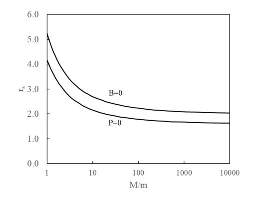
<figcaption class="paper-figure-caption"><b>Fig 1.</b> FIG. 1. Equilibrium density rₛ where the electron-hole gas has an energy minimum and the total pressure P = 0. The electron-hole gas becomes thermodynamically unstable when the bulk modulus B = 0. This point is known as the compressibility instability. Note that the rₛ of the B = 0 point is closely 1.25 that of the equilibrium rₛ where P = 0.</figcaption>
</figure>
<figure class="paper-figure-card">

<figcaption class="paper-figure-caption"><b>Fig 2.</b> Figure 1 shows that the electron-hole gas has an equilibrium rₛ that varies from 4.19 (the same as the electron gas in a uniform background) when M/m = 1, and is asymptotic to rₛ = 1.63 for large M/m. The reason for the asymptotic behavior is that the kinetic energy of the holes becomes negligible for large mass, while the exchange energy is independent of mass and the correlation energy becomes independent of mass for large M. If there were no other factors, the electron-hole gas would sit at the equilibrium rₛ.</figcaption>
</figure>
<figure class="paper-figure-card">
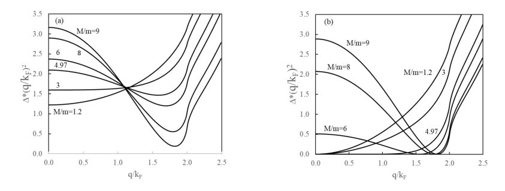
<figcaption class="paper-figure-caption"><b>Fig 3.</b> FIG. 2. The electron-hole gas in this simple model has a unique minimum of its ground state energy at each mass ratio M/m; this is the equilibrium density. (a) Δ·(q/kᴹ)² at the equilibrium density for representative mass ratios. At small mass ratios the curves increase monotonically; for larger mass ratios the decrease at large q reflects the incipient charge density wave. (b) Δ·(q/kᴹ)² evaluated at the rₛ where the quantity first reaches zero, obtained by increasing rₛ from its equilibrium value. At small mass ratios the instability is at q = 0 (compressibility instability); at larger mass ratios it is at finite q (charge density wave).</figcaption>
</figure>
<figure class="paper-figure-card">
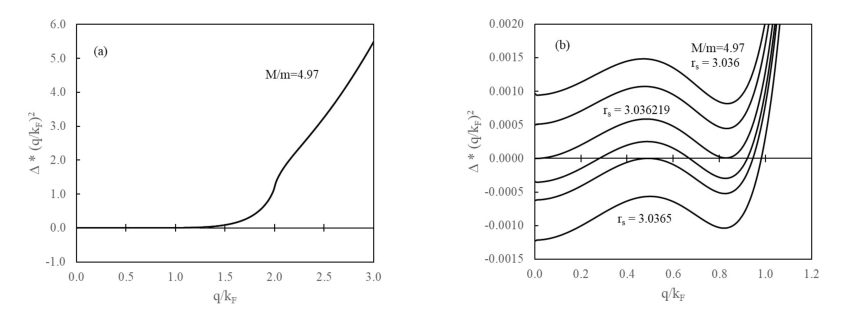
<figcaption class="paper-figure-caption"><b>Fig 4.</b> FIG. 3. The triple point at M/m = 4.97, rₛ = 3.036219. (a) Δ·(q/kᴹ)² at the triple point density, which appears close to zero over a wide range of q. (b) 100× magnification showing the two simultaneous zeros at q = 0 and q = 0.83kᴹ, confirming the coexistence of the compressibility instability and the charge density wave at a single density.</figcaption>
</figure>
<figure class="paper-figure-card">
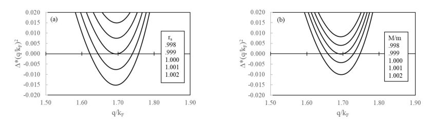
<figcaption class="paper-figure-caption"><b>Fig 5.</b> FIG. 4. High sensitivity of the charge density wave instability to small changes in rₛ and M/m, illustrated for M/m = 7 (charge density wave at rₛ = 2.60779, q/kᴹ = 1.69). (a) rₛ varied by the amounts indicated. (b) M/m varied by the amounts indicated. A change of 0.1% in either variable is sufficient to trigger or suppress the charge density wave.</figcaption>
</figure>
</div>

<p><strong>Summary.</strong> This theoretical work models an electron-hole gas to propose a unified mechanism explaining high-$T_c$ superconductivity, CDWs, and anomalous resistivity. By analyzing the system's response function $\Delta$, the authors show that instabilities inherent to the two-component plasma simultaneously enhance pairing attraction and drive charge ordering. The model provides quantitative estimates for $T_c$ approaching room temperature under specific mass ratio conditions.</p>
<p><strong>Why it may be interesting.</strong> Although focused on condensed matter correlations, the methodology of linking multiple emergent phenomena (superconductivity, charge order) through a single mathematical instability parameter $\Delta$ is highly relevant for understanding complex many-body phase diagrams in quantum systems.</p>
<details>
<summary>Detailed structure</summary>
<p><strong>Main problem.</strong> The paper investigates a potential common origin for high-temperature superconductivity, charge density waves (CDWs), and anomalous $T^2$ electrical resistivity in an electron-hole gas.</p>
<p><strong>Main result.</strong> A single underlying instability mechanism within the two-component Coulomb gas simultaneously enhances all three phenomena, leading to crude estimates of room-temperature superconductivity ($T_c \approx 275 	ext{ K}$ at $M/m=9$).</p>
<p><strong>Method.</strong> The analysis uses linear response theory applied to a simple, physically motivated model involving electron and hole interactions via Coulomb potentials.</p>
<p><strong>Model / system.</strong> The system is a neutral degenerate plasma of equal numbers of electrons and positively charged fermions (holes), interacting purely via the Coulomb potential. The behavior is governed by a single diagnostic function $\Delta(q)$, which signals instabilities.</p>
<p><strong>Key observables.</strong> Superconducting transition temperature ($T_c$), charge density wave instability wave vector ($q$), compressibility instability ($q=0$), and effective electron-electron interaction strength ($\lambda$).</p>
<p><strong>Important parameters / regimes.</strong> Mass ratio ($M/m$) and reduced Wigner-Seitz radius ($r_s$); the critical value $M/m = 4.97$ marks a triple point of instabilities.</p>
<p><strong>Assumptions / limitations.</strong> Key assumptions include approximating electron-hole correlation energy independence from density, assuming local field factors are those of independent uniform gases, and setting certain off-diagonal correlation terms to zero ($G_{12}=0$).</p>
<p><strong>Figures summary.</strong> Figures illustrate the coexistence of instabilities (triple point at $M/m=4.97$), the strong enhancement of attractive interactions near instability points, and plots showing $T_c$ dependence on $M/m$.</p>
<p><strong>Paper structure.</strong> The paper progresses by establishing the model using linear response theory, identifying the key diagnostic function $\Delta$, demonstrating how its zeros trigger CDW or compressibility instabilities, and finally applying these insights to estimate superconducting parameters ($\lambda, T_c$).</p>
</details>
<details>
<summary>Abstract</summary>
<p>A neutral degenerate plasma of equal numbers of electrons and positively charged fermions (holes) -- the electron-hole gas -- is studied using a simple, physically motivated two-parameter model (density r_s and mass ratio M/m). Two simplifying assumptions are made but not proven: the electron-hole correlation energy is approximately independent of density and does not affect the pressure or bulk modulus, and the electron-hole contribution to the local field factors is zero, allowing use of the known electron-gas local field factors. With these assumptions the phase diagram, instabilities, and effective interactions can be calculated for all mass ratios and densities using simple formulae, reproducible on a laptop. The key new physics is the additional screening provided by the mobile holes. A single function Delta appears in the denominator of all effective interactions and response functions. Near the zeros of Delta at q = 0 (compressibility instability) and at finite q, three phenomena are simultaneously enhanced: charge density waves (for M/m &gt;= 4.97), a large T^2 electrical resistivity from electron-hole scattering, and an attractive electron-electron interaction that is the purely electronic analog of BCS electron-phonon coupling. Crudely estimated superconducting transition temperatures approach room temperature, reaching approximately 275 K at M/m = 9. No claim is made that this model applies to any specific material. The aim is to provoke scrutiny of the assumptions, calculation of the unknown local field factors, and investigation of whether this minimal two-carrier framework maps onto real systems.</p>
</details>
<p><sub><a href="#top">↑ back to top</a></sub></p>

<p><a id="paper-2606.06997"></a></p>
<h3 id="regular-and-chaotic-dynamics-of-nonlinear-optomechanical-systems-controlled-by-modulated-light"><a href="http://arxiv.org/abs/2606.06997v1">Regular and chaotic dynamics of nonlinear optomechanical systems controlled by modulated light</a></h3>
<p><strong>Authors:</strong> A. P. Saiko, G. A. Rusetsky, S. A. Markevich, R. Fedaruk<br>
<strong>Type:</strong> theory · <strong>Category:</strong> other · <strong>PDF:</strong> <a href="https://arxiv.org/pdf/2606.06997v1">https://arxiv.org/pdf/2606.06997v1</a><br>
<strong>Analysis basis:</strong> full PDF text, analyzed in chunks
<strong>Topic relevance:</strong> <code>driven-dissipative phase transition</code> <strong>3/5</strong> · <code>analog quantum simulation</code> <strong>2/5</strong> · <code>methods for driven-dissipative</code> <strong>2/5</strong> · <code>non-equilibrium dynamics</code> <strong>2/5</strong> · <code>Tavis-Cummings &amp; cavity-many-emitter</code> <strong>1/5</strong> · <code>correlated cavity matter</code> <strong>1/5</strong> · <code>non-equilibrium universality</code> <strong>1/5</strong></p>
<div class="figure-strip-hint">↔ Scroll figures horizontally</div>
<div class="paper-figures-scroll">
<figure class="paper-figure-card">
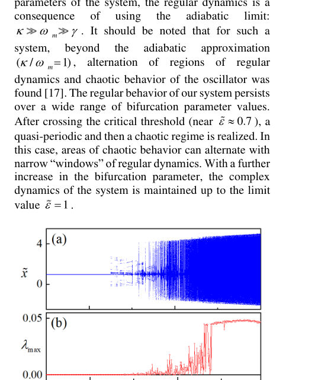
<figcaption class="paper-figure-caption"><b>Fig 1.</b> FIG. 1. (a) Bifurcation diagram and (b) the largest Lyapunov exponent for a mechanical resonator (oscillator) of an optomechanical system with linear</figcaption>
</figure>
<figure class="paper-figure-card">
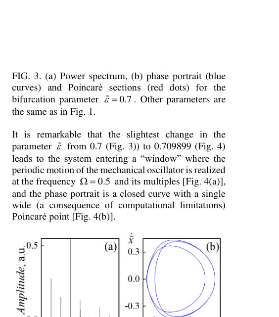
<figcaption class="paper-figure-caption"><b>Fig 2.</b> FIG. 4. (a) Power spectrum, (b) phase portrait (blue curves) and Poincaré section (the red dot) for the bifurcation parameter 0.709899 = . Other parameters are the same as in Fig. 1.</figcaption>
</figure>
<figure class="paper-figure-card">
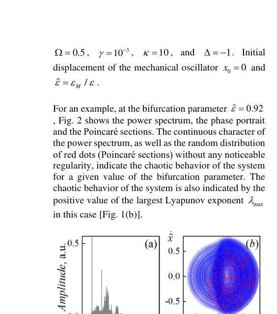
<figcaption class="paper-figure-caption"><b>Fig 3.</b> FIG. 2. (a) Power spectrum, (b) phase portrait (blue curves) and Poincaré sections (red dots) for the value</figcaption>
</figure>
<figure class="paper-figure-card">
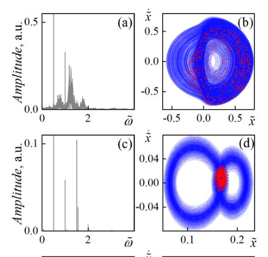
<figcaption class="paper-figure-caption"><b>Fig 4.</b> FIG. 5. Power spectra, phase portraits (blue curves) and Poincaré sections (red dots) for the bifurcation parameter 0.829448 = . (a) and (b) 1 0.1, g =</figcaption>
</figure>
<figure class="paper-figure-card">
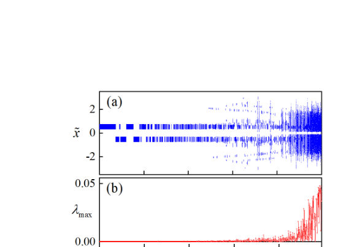
<figcaption class="paper-figure-caption"><b>Fig 5.</b> FIG. 6. Bifurcation diagram (a) and the largest Lyapunov exponent (b) for a mechanical resonator of an optomechanical system with a membrane-in-the- middle configuration and quadratic 2 ( 0.042) g = photon-vibration interaction. The normalized (with respect to 355.6 m = kHz) parameters are: 1.3 = ,</figcaption>
</figure>
</div>

<p><strong>Summary.</strong> This paper theoretically analyzes how nonlinearity influences the transition between regular and chaotic motion in optomechanical oscillators driven by modulated light. By mapping out phase space using Lyapunov exponents and Poincaré sections, the authors demonstrate that nonlinearity does not monotonically enhance chaos. The findings suggest controlling these systems near the edge of chaos for applications like sensing or random number generation.</p>
<p><strong>Why it may be interesting.</strong> This work is highly relevant as it applies nonlinear dynamics tools to a quantum optics platform (optomechanics), providing insights into chaos control and the engineering of non-classical states or noise sources using engineered potentials.</p>
<details>
<summary>Detailed structure</summary>
<p><strong>Main problem.</strong> The study investigates the transition between regular and chaotic dynamics in nonlinear optomechanical systems subjected to modulated driving fields.</p>
<p><strong>Main result.</strong> The system exhibits a non-monotonic dependence of chaos on nonlinearity order, and specific configurations (like membranes) show clear transitions from quasi-periodic motion to chaos, suggesting potential applications for sensing or random number generation.</p>
<p><strong>Method.</strong> The analysis employs advanced tools from dynamical systems theory, including constructing bifurcation diagrams, calculating the largest Lyapunov exponent, and analyzing Poincaré sections.</p>
<p><strong>Model / system.</strong> The model is an optomechanical system involving a mechanical resonator coupled to an optical field. The dynamics are governed by nonlinear interactions (linear, quadratic, cubic) between photons and mechanical displacements.</p>
<p><strong>Key observables.</strong> Bifurcation diagrams ($\epsilon$ vs. dynamic regime), Largest Lyapunov exponent ($\lambda_{max}$), Power spectra, Phase portraits, and Poincaré sections.</p>
<p><strong>Important parameters / regimes.</strong> Modulation amplitude/parameter ($\epsilon$), modulation frequency ($\Omega$), and the coupling strengths (linear $g$, quadratic $g'$, cubic $g''$).</p>
<p><strong>Assumptions / limitations.</strong> The analysis often relies on the adiabatic elimination of the optical field variables, assuming the cavity decay rate is much larger than the mechanical resonance frequency.</p>
<p><strong>Figures summary.</strong> Figures illustrate transitions between regimes: quasi-periodic motion (structured Poincaré points/discrete spectrum) vs. chaotic motion (randomly distributed points/continuous spectrum), particularly in membrane systems showing interwell chaos.</p>
<p><strong>Paper structure.</strong> The paper systematically analyzes the dynamics by varying nonlinearity orders and control parameters ($\epsilon$), comparing results from different coupling terms, and detailing specific physical realizations like the membrane-in-the-middle configuration.</p>
</details>
<details>
<summary>Abstract</summary>
<p>The nonlinear dynamics of a mechanical resonator in an optomechanical system with linear, quadratic and cubic photon-vibration interactions (with respect to mechanical displacements) in a modulated driving field under conditions of adiabatic elimination of the optical field is studied. Based on the constructed bifurcation diagrams of the mechanical coordinate and the largest Lyapunov exponent as a function of the modulation amplitude, as well as power spectra, phase portraits and Poincare sections, regions of regular and chaotic dynamics of the optomechanical system are identified. It is also shown that for a certain modulation amplitude in the presence of all three types of interactions, chaotic dynamics of the mechanical resonator (oscillator) is realized, which is replaced by quasi-periodic oscillations in the absence of cubic interaction, and the system returns to chaotic behavior if only linear interaction remains. This non-monotonic dependence of chaotic dynamics on the order of nonlinearity originates from the interplay between parametric driving and effective potential reshaping and manifests that nonlinearity does not always enhance chaos. For an optomechanical system in a membrane-in-the-middle configuration, where only quadratic photon-vibration interaction is present, it is demonstrated that at small modulation amplitudes the mechanical oscillator exhibits quasi-periodic motion in each of the wells of a symmetric two-minimum potential, whereas large modulation amplitudes lead to chaotic motion, involving interwell transitions.</p>
</details>
<p><sub><a href="#top">↑ back to top</a></sub></p>

<p><a id="paper-2606.07352"></a></p>
<h3 id="tests-of-constructor-theory"><a href="http://arxiv.org/abs/2606.07352v1">Tests of constructor theory</a></h3>
<p><strong>Authors:</strong> Chiara Marletto, David Deutsch, Vlatko Vedral<br>
<strong>Type:</strong> theory · <strong>Category:</strong> other · <strong>PDF:</strong> <a href="https://arxiv.org/pdf/2606.07352v1">https://arxiv.org/pdf/2606.07352v1</a><br>
<strong>Analysis basis:</strong> full PDF text, analyzed in chunks
<strong>Topic relevance:</strong> <code>entanglement &amp; information structure</code> <strong>3/5</strong> · <code>non-equilibrium dynamics</code> <strong>2/5</strong> · <code>analog quantum simulation</code> <strong>1/5</strong> · <code>correlated / nonlocal dissipation</code> <strong>1/5</strong> · <code>driven-dissipative phase transition</code> <strong>1/5</strong> · <code>measurement-induced transitions</code> <strong>1/5</strong> · <code>methods for driven-dissipative</code> <strong>1/5</strong> · <code>non-equilibrium universality</code> <strong>1/5</strong> · <code>quantum measurements</code> <strong>1/5</strong></p>
<div class="figure-strip-hint">↔ Scroll figures horizontally</div>
<div class="paper-figures-scroll">
<figure class="paper-figure-card">

<figcaption class="paper-figure-caption"><b>Fig 1.</b> Figure 1: Information media and superinformation media: quantum systems can be proven to be a special case of superinformation media.</figcaption>
</figure>
<figure class="paper-figure-card">
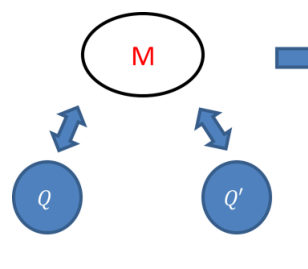
<figcaption class="paper-figure-caption"><b>Fig 2.</b> Figure 3: The entanglement-based witness of non-classicality. If M can entangle (by local means) the quantum probes Q and Q’, then it must be non-classical.</figcaption>
</figure>
<figure class="paper-figure-card">
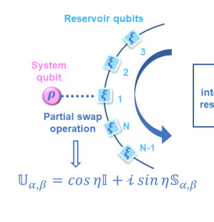
<figcaption class="paper-figure-caption"><b>Fig 3.</b> Figure 5: The quantum homogeniser used to model the constructor-based irre- versibility. The homogenizer consists of N qubits initialised in the target state, |ξ⟩. The system qubit is initialised in the input state |ρ⟩. At each step, the system qubit interacts with one of the qubits in the homogeniser, via the partial swap operation (parametrised by the angle η): 1 is the identity transformation, while Sα,β is the swap gate defined on two qubits α and β. As N →∞, the system qubit approaches the target state after N partial swaps.</figcaption>
</figure>
<figure class="paper-figure-card">
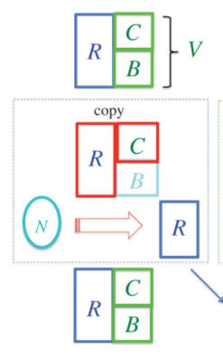
<figcaption class="paper-figure-caption"><b>Fig 4.</b> Figure 6: The logic of self-reproduction with the replication-vehicle logic. An accurate self-reproducer (top) consists of the replicator R (in blue) and the vehicle V (in green) containing the copier C and the constructor B. In the copy phase, C copies the replicator R. In the construction phase, B executes the recipe in R to build a vehicle from generic resources N. Bottom: the copy of R and the newly constructed vehicle form the offspring.</figcaption>
</figure>
</div>

<p><strong>Summary.</strong> This paper introduces Constructor Theory, a foundational framework proposing that fundamental laws should be expressed as constraints on the possible transformations (tasks) achievable by physical systems. It generalizes concepts like non-cloning and irreversibility to abstract information media, offering potential tests applicable even in regimes where standard quantum mechanics might break down.</p>
<p><strong>Why it may be interesting.</strong> It offers a meta-theoretical framework that attempts to unify disparate physical concepts—information, computation, thermodynamics, and biology—under a single set of possibility constraints, which is highly relevant for foundational physics beyond current quantum field theories.</p>
<details>
<summary>Detailed structure</summary>
<p><strong>Main problem.</strong> To develop a foundational theory of physical principles that constrains what tasks are possible or impossible, extending beyond current quantum theories by focusing on task feasibility rather than specific dynamics.</p>
<p><strong>Main result.</strong> Constructor Theory provides a framework where fundamental laws (like irreversibility and non-cloning) emerge from general constraints on information processing capabilities. It suggests that physical laws should be described as necessary conditions for the possibility of tasks.</p>
<p><strong>Method.</strong> The theory uses an abstract concept of 'tasks' (input/output transformations) defined over generalized 'information media,' allowing statements to be made independent of specific dynamical formalisms like Hamiltonians or Hilbert spaces.</p>
<p><strong>Model / system.</strong> The core model is the 'universal constructor,' a hypothetical machine capable of performing all physically possible tasks. Testing involves analyzing hybrid systems (e.g., quantum probes interacting with unknown media) and biological self-reproduction.</p>
<p><strong>Key observables.</strong> Possibility/impossibility of transformations (tasks), non-classicality witnesses, fidelity of self-reproduction, and correlations in hybrid quantum-classical measurements.</p>
<p><strong>Important parameters / regimes.</strong> Scale independence, information capacity, and the degree of correlation between local interactions and global entanglement.</p>
<p><strong>Assumptions / limitations.</strong> The theory assumes principles like locality and interoperability of information; it aims to supplement existing laws rather than replace them entirely.</p>
<p><strong>Figures summary.</strong> Figures illustrate the replicator-vehicle logic for self-reproduction, the structure of composite information media, and entanglement witnesses derived from local interactions with an unknown medium.</p>
<p><strong>Paper structure.</strong> The paper reviews constructor theory by first establishing its foundational principles (tasks, possibility), then applying it to specific domains like thermodynamics, quantum information (non-cloning/entanglement witnesses), and the emergence of life. It contrasts this approach with standard axiomatic reconstructions.</p>
</details>
<details>
<summary>Abstract</summary>
<p>Constructor theory is a proposal to extend quantum information theory beyond both quantum theory and computation, to cover more general machines than programmable computers -- called constructors. It consists of newly conjectured physical principles that can be expressed as constraints on what tasks are possible, what are impossible, and why. These principles also determine the repertoire of the universal constructor, which is a programmable machine that can perform all physically possible tasks. The principles of constructor theory have novel physical content that supplements current dynamical laws, leading to new predictions for experimental tests. In this paper, we review the main experimental proposals to test the principles of constructor theory and discuss their implications for existing theories of physics and for their successors.</p>
</details>
<p><sub><a href="#top">↑ back to top</a></sub></p>

<p><a id="paper-2606.06925"></a></p>
<h3 id="a-machine-learning-based-approach-to-the-evaluation-of-the-critical-scaling-behavior-of-anisotropic-spin-systems"><a href="http://arxiv.org/abs/2606.06925v1">A Machine-Learning Based Approach to the Evaluation of the Critical Scaling Behavior of Anisotropic Spin Systems</a></h3>
<p><strong>Authors:</strong> Alina A. Chubarova, Ivan A. Mamonov, Marina V. Mamonova, Mikhail I. Bogachev, Pavel V. Prudnikov<br>
<strong>Type:</strong> theory · <strong>Category:</strong> statistical mechanics · <strong>PDF:</strong> <a href="https://arxiv.org/pdf/2606.06925v1">https://arxiv.org/pdf/2606.06925v1</a><br>
<strong>Analysis basis:</strong> full PDF text, analyzed in chunks
<strong>Topic relevance:</strong> <code>methods for driven-dissipative</code> <strong>3/5</strong> · <code>driven-dissipative phase transition</code> <strong>2/5</strong> · <code>non-equilibrium universality</code> <strong>2/5</strong> · <code>analog quantum simulation</code> <strong>1/5</strong> · <code>exotic spin models in light-matter</code> <strong>1/5</strong> · <code>non-equilibrium dynamics</code> <strong>1/5</strong> · <code>spintronics-quantum-optics interface</code> <strong>1/5</strong></p>
<div class="figure-strip-hint">↔ Scroll figures horizontally</div>
<div class="paper-figures-scroll">
<figure class="paper-figure-card">
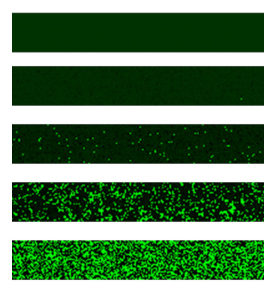
<figcaption class="paper-figure-caption"><b>Fig 1.</b> FIG. 1. Visualization of correlation matrix at different temperatures.</figcaption>
</figure>
<figure class="paper-figure-card">
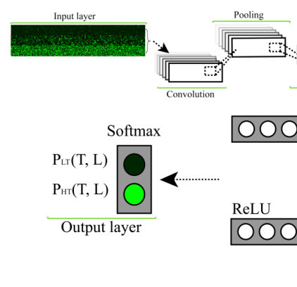
<figcaption class="paper-figure-caption"><b>Fig 2.</b> FIG. 2. The architecture of the convolutional neural network employed in this study.</figcaption>
</figure>
<figure class="paper-figure-card">
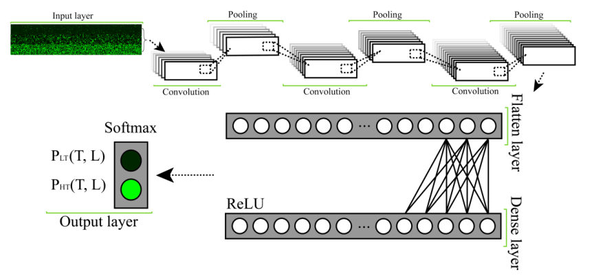
<figcaption class="paper-figure-caption"><b>Fig 3.</b> Fig. 2 illustrates the overall workflow, including both feature extraction and subsequent</figcaption>
</figure>
<figure class="paper-figure-card">
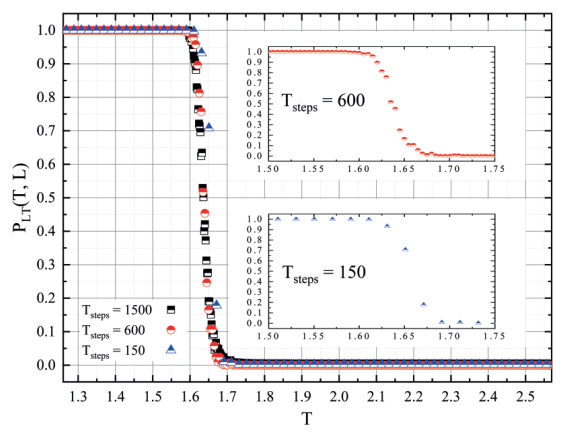
<figcaption class="paper-figure-caption"><b>Fig 4.</b> FIG. 3. Temperature dependence of PLT for L = 16. Three temperature grids are compared:</figcaption>
</figure>
<figure class="paper-figure-card">
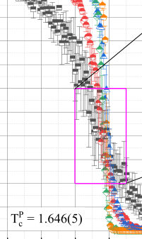
<figcaption class="paper-figure-caption"><b>Fig 5.</b> FIG. 4. Temperature dependence of PLT for L = 8, 16, 24, 32, 48.</figcaption>
</figure>
</div>

<p><strong>Summary.</strong> This paper proposes a novel machine learning framework using Convolutional Neural Networks (CNNs) to pinpoint the critical temperature in anisotropic spin systems. By training on correlation matrices from Monte Carlo simulations, the method significantly reduces computational overhead while maintaining high accuracy compared to traditional thermodynamic calculations. This demonstrates a powerful synergy between deep learning and condensed matter physics for studying phase transitions.</p>
<p><strong>Why it may be interesting.</strong> While focused on spin systems, the core methodology—using deep learning to extract complex physical parameters from high-dimensional simulation data—is highly relevant for analyzing quantum many-body dynamics or phase transitions in simulated quantum materials.</p>
<details>
<summary>Detailed structure</summary>
<p><strong>Main problem.</strong> The study aims to evaluate the critical scaling behavior and identify the critical point ($T_c$) in anisotropic spin systems.</p>
<p><strong>Main result.</strong> The machine learning approach provides estimates for $T_c$ that show very good agreement with reference Monte Carlo simulations while achieving a computational cost reduction of about 10x compared to classical methods.</p>
<p><strong>Method.</strong> A Convolutional Neural Network (CNN) is trained on correlation matrices derived from Monte Carlo simulations. The critical temperature is then estimated using multiple inference techniques applied to the CNN's probabilistic output.</p>
<p><strong>Model / system.</strong> The system modeled is a three-dimensional Heisenberg spin system exhibiting easy-axis anisotropy, described by a specific Hamiltonian involving exchange interactions ($J$) and anisotropy ($\Delta$).</p>
<p><strong>Key observables.</strong> Correlation function $C_i(T)$, averaged output probabilities $P(T, L)$, deviation functions $E_r(T, L)$, and correlation-length-like quantities $\xi$.</p>
<p><strong>Important parameters / regimes.</strong> The critical exponent ($
u$) is determined to be approximately 0.58(1). The analysis depends on the system size ($L$) and temperature discretization.</p>
<p><strong>Assumptions / limitations.</strong> The accuracy of the ML method relies heavily on the quality and density of the training data, particularly requiring fine temperature sampling near the critical region.</p>
<p><strong>Figures summary.</strong> Figures illustrate correlation matrix changes across temperatures, the CNN architecture, and how varying the temperature sampling grid affects the sharpness of the transition observed in probability curves.</p>
<p><strong>Paper structure.</strong> The paper introduces the physical problem, details the ML/CNN methodology using correlation matrices as input, presents multiple estimators for $T_c$ (crossing points, peak positions), validates results against classical Monte Carlo simulations, and concludes with finite-size scaling analysis to determine critical exponents.</p>
</details>
<details>
<summary>Abstract</summary>
<p>Computational models adequately representing phase transitions and evaluating the critical system parameters are essential for the understanding of the properties of a wide range of materials. Here we propose a machine learning (ML)-based approach to the identification of the critical point in anisotropic spin systems. Our approach implies training of a convolutional neural network (CNN) model from the correlation matrices obtained by Monte Carlo simulations. Next, the pretrained model is employed as a fast estimator of the critical temperature, which can be extracted in several complementary ways from the CNN model inference, this way improving the robustness of the analysis. The ML-based estimates obtained in this study are in very good agreement with the reference Monte Carlo simulation results, while computational costs are about 10x lower compared to the classical thermodynamic approach.</p>
</details>
<p><sub><a href="#top">↑ back to top</a></sub></p>

<p><a id="paper-2606.06588"></a></p>
<h3 id="demystifying-objectivity-with-operator-algebra-quantum-error-correction"><a href="http://arxiv.org/abs/2606.06588v1">Demystifying Objectivity with Operator Algebra Quantum Error Correction</a></h3>
<p><strong>Authors:</strong> Marin Girard, Gong Cheng, ChunJun Cao<br>
<strong>Type:</strong> theory · <strong>Category:</strong> quantum information and computing · <strong>PDF:</strong> <a href="https://arxiv.org/pdf/2606.06588v1">https://arxiv.org/pdf/2606.06588v1</a><br>
<strong>Analysis basis:</strong> full PDF text, analyzed in chunks
<strong>Topic relevance:</strong> <code>entanglement &amp; information structure</code> <strong>3/5</strong> · <code>correlated / nonlocal dissipation</code> <strong>2/5</strong> · <code>measurement-induced transitions</code> <strong>2/5</strong> · <code>driven-dissipative phase transition</code> <strong>1/5</strong> · <code>methods for driven-dissipative</code> <strong>1/5</strong> · <code>non-equilibrium dynamics</code> <strong>1/5</strong> · <code>quantum measurements</code> <strong>1/5</strong></p>
<div class="figure-strip-hint">↔ Scroll figures horizontally</div>
<div class="paper-figures-scroll">
<figure class="paper-figure-card">

<figcaption class="paper-figure-caption"><b>Fig 1.</b> FIG. 1. a) Plot of max|f| I(R : f) and E|f|(R : f) for a [[120, 10]] CSS code with dZ = 1 and dX = 20, which captures the decoherence of a 10-qubit system. Maximization and aver- aging is done over contiguous fragments. b) Plot of the exact E|f|(R : f) for a [[30, 1]] CSS code with dZ = 1, dX = 15, alongside the full theoretical prediction (9) and sparse ap- proximation (10). The values of m(ϵ) Z and m(ϵ) X that bound the classical plateau up to ϵ precision as per Corollary 9 is shown in green.</figcaption>
</figure>
<figure class="paper-figure-card">
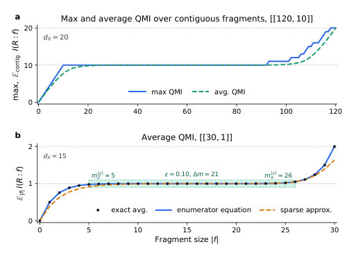
<figcaption class="paper-figure-caption"><b>Fig 2.</b> Fig. 1 shows the bounds proposed by Corollary 9 on a plateau with ϵ = 0.1. Algebraic objectivity. In addition to their strong con- nection to existing QD concepts, the algebraic formula- tion provides precise tracking of both the type and the distribution of information — given f, one can efficiently determine the logical operators supported on it using our algorithm presented in the End Matter. With this im- proved precision, we can easily classify different strengths of objectivity and characterize them along our two cri- teria: classicality and redundancy. We highlight a few interesting classes and draw connections with existing lit- erature on QD.</figcaption>
</figure>
<figure class="paper-figure-card">
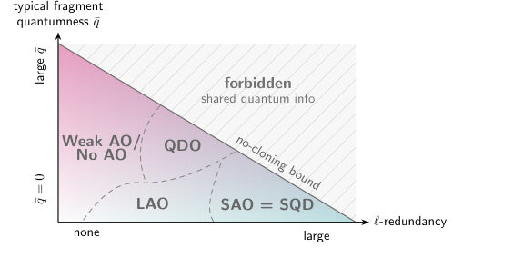
<figcaption class="paper-figure-caption"><b>Fig 3.</b> FIG. 2. Algebraic regimes for a chosen fragment family F = {fi}. The horizontal axis is the number of bits that are ℓ- redundant for ℓ= O(|F|), the number of fragments, while the vertical axis is a typical local quantum rank of the recoverable algebra ¯q = ⟨qi⟩F. The blue/pink hue also encodes ℓand ¯q. Different regimes of algebraic objectivity occupy distinct regions of this diagram, separated schematically by dashed lines. The hatched region is forbidden, as entering it would require the fragment family to redundantly share noncentral logical information.</figcaption>
</figure>
<figure class="paper-figure-card">
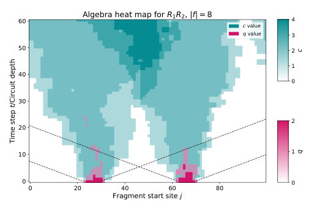
<figcaption class="paper-figure-caption"><b>Fig 4.</b> FIG. 3. Heat map of the algebra Mf for all contiguous frag- ments fj = {j −|f| + 1, j −|f| + 2, · · · , j} with |f| = 8 and two k = 2 sources broadcasting in a brickwork circuit con- struction. Each pixel encodes the algebraic content with teal for classical c information and pink for quantum information q. While classical information spreads out from both sources, fragments lose access to the quantum information quickly. We overlay the emergent light cone bound of each source for our brickwork circuit.</figcaption>
</figure>
<figure class="paper-figure-card">
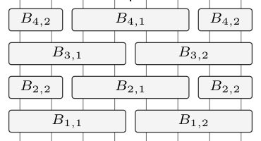
<figcaption class="paper-figure-caption"><b>Fig 5.</b> FIG. 4. Schematic brickwork Clifford circuit with periodic boundary conditions. Each layer is a product of disjoint local bricks, and adjacent layers are shifted by half a block. Match- ing labels at the two edges denote a periodic brick.</figcaption>
</figure>
</div>

<p><strong>Summary.</strong> This work develops an algebraic framework to precisely define objectivity by linking it to the local recoverability properties within quantum error-correcting codes. By analyzing the structure of logical Pauli algebras on system fragments, the authors unify existing measures and provide quantitative criteria (SAO, LAO) for how classical information emerges from quantum entanglement.</p>
<p><strong>Why it may be interesting.</strong> It provides a deep mathematical link between fundamental concepts of quantum foundations (objectivity/classicality) and the highly structured tools of Quantum Error Correction Codes, which is crucial for understanding decoherence dynamics in complex systems.</p>
<details>
<summary>Detailed structure</summary>
<p><strong>Main problem.</strong> The paper aims to precisely characterize the emergence of 'objectivity' and 'classicality' from quantum mechanics, moving beyond partial descriptions like Quantum Darwinism.</p>
<p><strong>Main result.</strong> Objectivity is rigorously identified with the algebraic local recoverability of quantum codes, providing a unified and computable classification scheme for classicality and redundancy.</p>
<p><strong>Method.</strong> The authors connect Quantum Darwinism to Operator Algebra Quantum Error Correction (QECC), using tools like analyzing the center of recoverable logical algebras ($Z(M_f)$) on stabilizer codes.</p>
<p><strong>Model / system.</strong> The analysis is performed within the framework of quantum error-correcting codes, specifically utilizing stabilizer codes defined by Pauli subgroups. The dynamics are simulated via 'brickwork circuits' modeling system-environment interaction.</p>
<p><strong>Key observables.</strong> Objectivity/Classicality Measure ($Z(M_f)$ non-triviality), Quantum Mutual Information (QMI), Classical bits ($c$), and Quantum qubits ($q$).</p>
<p><strong>Important parameters / regimes.</strong> Strong Algebraic Objectivity (SAO), Localized Algebraic Objectivity (LAO), Quantum Doped Objectivity (QDO); plateau widths related to code distances.</p>
<p><strong>Assumptions / limitations.</strong> The analysis heavily relies on the mathematical structure of stabilizer codes and uses Poisson approximations for calculating probabilities in random subsystem fragments.</p>
<p><strong>Figures summary.</strong> Figures illustrate QMI plateaus vs. fragment size, depict different algebraic regimes (SAO, LAO, QDO), and show heatmaps mapping classical ($c$) versus quantum ($q$) information content over simulated time steps.</p>
<p><strong>Paper structure.</strong> The paper builds from defining the problem using QD to establishing the connection with QECC algebra. It then develops theorems quantifying recoverability ($Z(M_f)$) and mutual information, culminating in proving equivalences between physical conditions (sQD) and algebraic structures (SAO).</p>
</details>
<details>
<summary>Abstract</summary>
<p>Quantum Darwinism extends the decoherence formalism to explain how classicality and objectivity emerge from quantum mechanics. However, existing approaches often capture only partial aspects of objectivity, leading to its mischaracterization and making it difficult to pin down precisely. By connecting quantum Darwinism to operator algebra quantum error correction, we show that the emergence of objectivity can be identified with the algebraic local recoverability of quantum codes. Applying this algebraic framework to stabilizer codes, we show that it yields a far more precise characterization of classicality and redundancy, unifies the traditional measures of objectivity, enables efficient classification via coding-theoretic tools, and supports large-scale Clifford simulations of decoherence dynamics.</p>
</details>
<p><sub><a href="#top">↑ back to top</a></sub></p>

<p><a id="paper-2606.06999"></a></p>
<h3 id="light-tunable-quantum-metric-non-linear-hall-response-in-berry-dipole-semimetals"><a href="http://arxiv.org/abs/2606.06999v1">Light-tunable quantum metric non-linear Hall response in Berry dipole semimetals</a></h3>
<p><strong>Authors:</strong> Debashree Chowdhury, Awadhesh Narayan<br>
<strong>Type:</strong> theory · <strong>Category:</strong> other · <strong>PDF:</strong> <a href="https://arxiv.org/pdf/2606.06999v1">https://arxiv.org/pdf/2606.06999v1</a><br>
<strong>Analysis basis:</strong> full PDF text, analyzed in chunks
<strong>Topic relevance:</strong> <code>methods for driven-dissipative</code> <strong>3/5</strong> · <code>non-equilibrium dynamics</code> <strong>3/5</strong> · <code>Keldysh / 2PI / non-Gaussian methods</code> <strong>2/5</strong> · <code>driven-dissipative phase transition</code> <strong>1/5</strong> · <code>interference shaping light</code> <strong>1/5</strong> · <code>non-equilibrium universality</code> <strong>1/5</strong></p>
<div class="figure-strip-hint">↔ Scroll figures horizontally</div>
<div class="paper-figures-scroll">
<figure class="paper-figure-card">
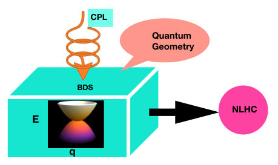
<figcaption class="paper-figure-caption"><b>Fig 1.</b> FIG. 1. (a) A schematic representation of our studied sys- tem. The Berry dipole semimetal (labeled as BDS), shows a quadratically dispersing band structure, in contrast to the linear bands in Weyl or Dirac materials. Here the conduction and valence bands touch each other at a point dipole node. We illuminate the BDS by circularly polarized light and an- alyze the quantum metric. Using it, we further explore the NLHC of the system in the presence of light.</figcaption>
</figure>
<figure class="paper-figure-card">
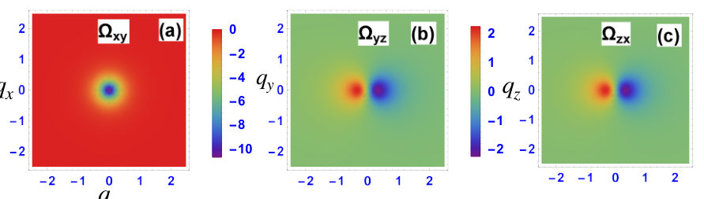
<figcaption class="paper-figure-caption"><b>Fig 2.</b> FIG. 2. (a) The Berry curvature Ωxy is plotted with qx and qy keeping qz = 0.5. Ωxy does not show the dipole nature. In panel (b), we plot Ωyz with qz and qy keeping qx = 0.5. This shows a dipolar nature. This dipole nature is also visible in (c), where we plot Ωzx as a function of qz and qx, keeping qy = 0.5. Importantly, in (b) and (c), as we vary q, we clearly observe the dipole nature of the Berry curvature.</figcaption>
</figure>
<figure class="paper-figure-card">
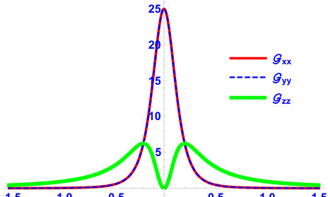
<figcaption class="paper-figure-caption"><b>Fig 3.</b> FIG. 3. Components of the quantum metric, Gxx (solid blue), Gyy (red dashed), and Gzz (green dot dashed) are plotted with q = p</figcaption>
</figure>
<figure class="paper-figure-card">
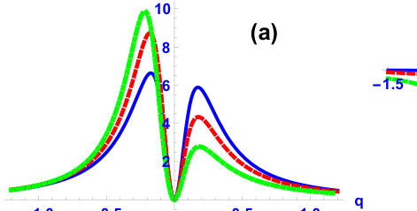
<figcaption class="paper-figure-caption"><b>Fig 4.</b> FIG. 4. (a) The diagonal component of the quantum metric, Gzz, plotted with q = p</figcaption>
</figure>
<figure class="paper-figure-card">
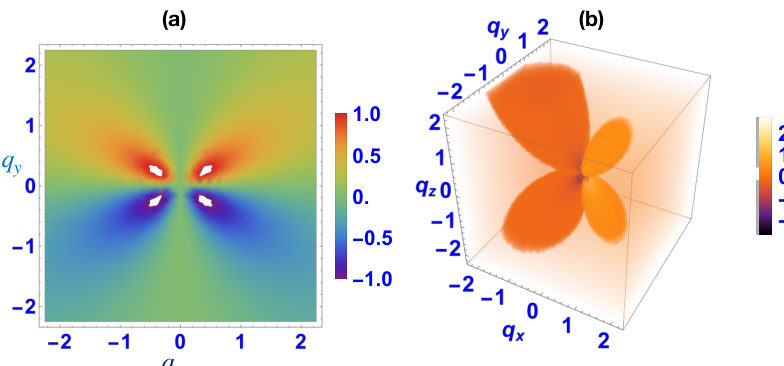
<figcaption class="paper-figure-caption"><b>Fig 5.</b> FIG. 5. (a) Plot of the integrand vyGxx −vxGyx with qy and qz taking qx = 0.23. (b) The same integrand, (vyGxx −vxGyx), is plotted in three-dimensions as a function of qx, qy, and qz. In panel (a), it is evident that although the patterns look symmetric, they are not identical, which is discernible from the central white structures. In panel (b), the asymmetric pattern is clearly visible in the distribution around the qz = 0 plane.</figcaption>
</figure>
</div>

<p><strong>Summary.</strong> This theoretical work demonstrates that applying light to Berry dipole semimetals allows for active, tunable control over their nonlinear Hall response. By inducing an asymmetry in the quantum metric via optical driving, researchers show that the direction of the resulting current can be flipped simply by increasing the light intensity past a certain threshold.</p>
<p><strong>Why it may be interesting.</strong> The concept of using light as a direct stimulus to control fundamental quantum geometric responses like the Hall effect is highly relevant for designing novel optoelectronic topological materials.</p>
<details>
<summary>Detailed structure</summary>
<p><strong>Main problem.</strong> The study investigates how light influences the intrinsic nonlinear Hall conductivity (NLHC) mediated by quantum metrics within Berry dipole semimetals.</p>
<p><strong>Main result.</strong> Light induces a tunable asymmetry in the off-diagonal part of the quantum metric, leading to a controllable NLHC whose direction can reverse when the light amplitude exceeds a critical threshold.</p>
<p><strong>Method.</strong> The authors used theoretical calculations involving Floquet theory (Floquet-Magnus expansion) and derived expressions for the Quantum Metric Dipole (DQM) under high-frequency optical driving.</p>
<p><strong>Model / system.</strong> The system modeled is a Berry dipole semimetal (BDS), characterized by a quadratic band structure arising from two Weyl nodes at a mirror-symmetric interface. The analysis uses an effective Hamiltonian derived via optical driving.</p>
<p><strong>Key observables.</strong> Nonlinear Hall conductivity (NLHC), Quantum Metric Dipole (QMD), and the off-diagonal components of the quantum metric ($G^{\Omega}_{xy}$).</p>
<p><strong>Important parameters / regimes.</strong> Light amplitude ($A_0$), light frequency ($\Omega$), and chemical potential ($\mu$).</p>
<p><strong>Assumptions / limitations.</strong> The analysis relies on the high-frequency approximation for optical driving, and specific limits (like $\Omega 	o 0$) require careful handling.</p>
<p><strong>Figures summary.</strong> Figures illustrate the BDS band structure, confirm the dipole nature of Berry curvature, show the emergence of light-induced asymmetry in quantum metric components ($G^{\Omega}_{xy}$), and plot the sign reversal of the DQM as a function of light amplitude.</p>
<p><strong>Paper structure.</strong> The paper builds from defining the physical system (BDSs) and its Hamiltonian, through calculating the relevant geometric quantities (Berry curvature, Quantum Metric), applying optical driving via Floquet theory to derive effective Hamiltonians, and finally analyzing the resulting nonlinear transport response (NLHC/DQM).</p>
</details>
<details>
<summary>Abstract</summary>
<p>We investigate the effect of light on quantum metric-mediated intrinsic nonlinear Hall conductivity in Berry dipole semimetals. We discover that light induces a tunable asymmetry in the off-diagonal part of the quantum metric, which is manifested by an asymmetry in the quantum metric dipole. We show that the nonlinear response can be tuned directly by the light amplitude. In particular, we note that the direction of the nonlinear Hall signal changes when the light amplitude is increased beyond a threshold value. Light thus emerges as a promising stimulus to control the quantum geometric response in topological semimetals.</p>
</details>
<p><sub><a href="#top">↑ back to top</a></sub></p>

<p><a id="paper-2606.07043"></a></p>
<h3 id="exact-noise-characterization-of-entanglement-distribution-in-star-networks"><a href="http://arxiv.org/abs/2606.07043v1">Exact noise characterization of entanglement distribution in star networks</a></h3>
<p><strong>Authors:</strong> Kenneth Goodenough, Xiaonan Chen, Patrick Emonts<br>
<strong>Type:</strong> theory · <strong>Category:</strong> quantum information and computing · <strong>PDF:</strong> <a href="https://arxiv.org/pdf/2606.07043v1">https://arxiv.org/pdf/2606.07043v1</a><br>
<strong>Analysis basis:</strong> full PDF text, analyzed in chunks
<strong>Topic relevance:</strong> <code>entanglement &amp; information structure</code> <strong>3/5</strong> · <code>correlated / nonlocal dissipation</code> <strong>2/5</strong> · <code>Keldysh / 2PI / non-Gaussian methods</code> <strong>1/5</strong> · <code>driven-dissipative phase transition</code> <strong>1/5</strong> · <code>methods for driven-dissipative</code> <strong>1/5</strong> · <code>non-equilibrium dynamics</code> <strong>1/5</strong></p>
<div class="figure-strip-hint">↔ Scroll figures horizontally</div>
<div class="paper-figures-scroll">
<figure class="paper-figure-card">
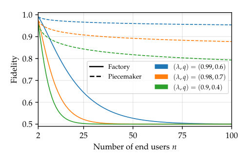
<figcaption class="paper-figure-caption"><b>Fig 1.</b> FIG. 1: Fidelity as a function of the number of end users n, for both the piecemaker and factory protocol. The solid and dashed lines correspond to the factory and piecemaker protocol, respectively. We plot the fidelity for several experimental parameters (λ, q) = (0.99, 0.6), (0.98, 0.7) and (0.9, 0.4).</figcaption>
</figure>
<figure class="paper-figure-card">
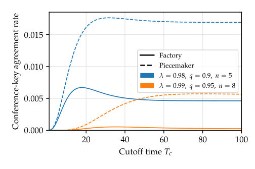
<figcaption class="paper-figure-caption"><b>Fig 2.</b> FIG. 2: Conference-key agreement rate as a function of the cut-off time Tc for the factory and piecemaker protocol, for (λ, q, n) = (0.98, 0.9, 5) , (0.99, 0.95, 8) and dephasing noise.</figcaption>
</figure>
<figure class="paper-figure-card">
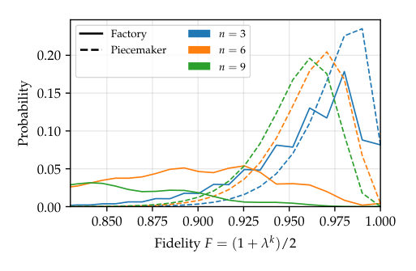
<figcaption class="paper-figure-caption"><b>Fig 3.</b> FIG. 4: Distribution of the fidelity for the factory and piecemaker protocol. Parameters chosen are λ = 0.98, q = 0.6 and n = 3, 6, 9, corresponding to the solid, dashed and dotted lines, respectively.</figcaption>
</figure>
<figure class="paper-figure-card">
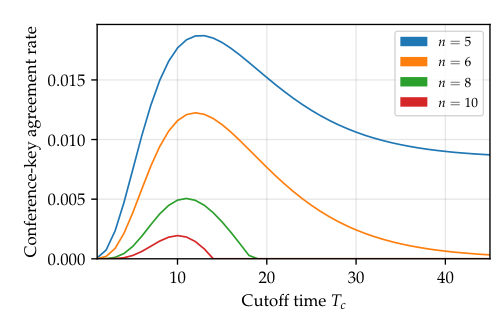
<figcaption class="paper-figure-caption"><b>Fig 4.</b> FIG. 3: Conference-key agreement rate as a function of the cut-off time Tc for the factory protocol, for (λ, q) = (0.99, 0.85), n = 5, 6, 8, 10 and depolarizing noise. Note that for n ≥6 the use of a cut-off is necessary to generate key.</figcaption>
</figure>
<figure class="paper-figure-card">
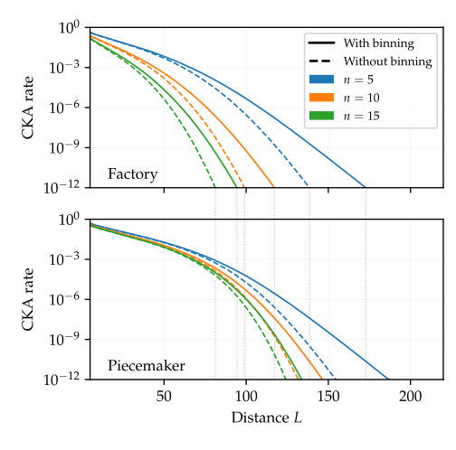
<figcaption class="paper-figure-caption"><b>Fig 5.</b> FIG. 5: Conference-key agreement rate with the factory protocol (top) and piecemaker protocol (bottom) as a function of the distance L, λ = 0.98 and for n = 5, 10, 15 end users. Solid lines are the case with binning (explained in the main text), dashed lines are without binning. The dotted, grey, vertical lines show the difference between factory and the piecemaker protocol.</figcaption>
</figure>
</div>

<p><strong>Summary.</strong> This work analyzes the noise accumulation when distributing multipartite entanglement over star network topologies. By comparing two protocols—Factory and Piece-maker—the authors derive exact analytical expressions for the average noise and its distribution under memory decoherence. The findings strongly advocate for the piececemaker protocol due to its superior performance in maintaining high fidelity across multiple users.</p>
<p><strong>Why it may be interesting.</strong> It provides rigorous analytical tools for quantifying resource degradation in quantum communication channels due to realistic decoherence mechanisms, which is crucial for designing fault-tolerant quantum networks.</p>
<details>
<summary>Detailed structure</summary>
<p><strong>Main problem.</strong> The paper characterizes the noise incurred during multipartite entanglement distribution across star networks, focusing on how memory decoherence affects the final state fidelity.</p>
<p><strong>Main result.</strong> It derives closed-form expressions showing that the piecemaker protocol significantly outperforms the factory protocol in terms of achievable users and key rates for a given level of noise.</p>
<p><strong>Method.</strong> The analysis uses analytical derivations, including generating functions and Pauli basis expansions, to calculate the average noise parameter E[Lambda] and its full probability distribution.</p>
<p><strong>Model / system.</strong> The system models quantum networking using star topologies where entangled states (like GHZ states) are distributed via a central node. The primary physical effect modeled is memory decoherence (dephasing or depolarizing noise) accumulated during stochastic waiting times.</p>
<p><strong>Key observables.</strong> Average noise parameter E[Lambda], output fidelity F, and conference key agreement rate.</p>
<p><strong>Important parameters / regimes.</strong> Decoherence rates ($\lambda$), link failure probability ($q$), number of users ($n$), and the global cut-off time ($T_c$).</p>
<p><strong>Assumptions / limitations.</strong> The analysis primarily focuses on memory decoherence; gate/measurement noise and initial state infidelities are ignored. The results often rely on approximations for finite cut-offs.</p>
<p><strong>Figures summary.</strong> Figures compare fidelity vs. number of users (n) and key agreement rate vs. cut-off time ($T_c$) for both protocols, demonstrating the superiority of the piecemaker method.</p>
<p><strong>Paper structure.</strong> The paper systematically derives noise metrics for two protocols (Factory and Piece-maker), extends the analysis from dephasing to depolarizing noise, calculates the full distribution of noise parameters, and compares performance using key rate metrics under finite cut-off conditions.</p>
</details>
<details>
<summary>Abstract</summary>
<p>Multipartite entanglement forms the core of many networking applications. In the near-term future, it is expected that multipartite distribution will be achieved first through star topologies, making it important to understand the noise incurred during the distribution process. In such networks, elementary links are created stochastically and successful links must be stored while waiting for the remaining links, causing memory decoherence that depends on the random waiting times. We derive analytical expressions for both the average noise and its distribution, when distributing GHZ states under memory dephasing in star networks. We study and compare two distribution protocols: the factory and piecemaker protocol. Furthermore, we find expressions for the case of a global cut-off (allowing fast optimization of the cut-off without requiring Monte Carlo simulations) and extend the analysis for the factory protocol to depolarizing noise for arbitrary states.</p>
</details>
<p><sub><a href="#top">↑ back to top</a></sub></p>

<p><a id="paper-2606.07425"></a></p>
<h3 id="tomography-of-quantum-states-with-bounded-extent"><a href="http://arxiv.org/abs/2606.07425v1">Tomography of quantum states with bounded extent</a></h3>
<p><strong>Authors:</strong> Srinivasan Arunachalam, Arkopal Dutt<br>
<strong>Type:</strong> theory · <strong>Category:</strong> quantum information and computing · <strong>PDF:</strong> <a href="https://arxiv.org/pdf/2606.07425v1">https://arxiv.org/pdf/2606.07425v1</a><br>
<strong>Analysis basis:</strong> full PDF text, analyzed in chunks
<strong>Topic relevance:</strong> <code>quantum measurements</code> <strong>3/5</strong> · <code>entanglement &amp; information structure</code> <strong>2/5</strong> · <code>measurement-induced transitions</code> <strong>2/5</strong> · <code>Keldysh / 2PI / non-Gaussian methods</code> <strong>1/5</strong> · <code>methods for driven-dissipative</code> <strong>1/5</strong></p>
<div class="figure-strip-hint">↔ Scroll figures horizontally</div>
<div class="paper-figures-scroll">
<figure class="paper-figure-card">
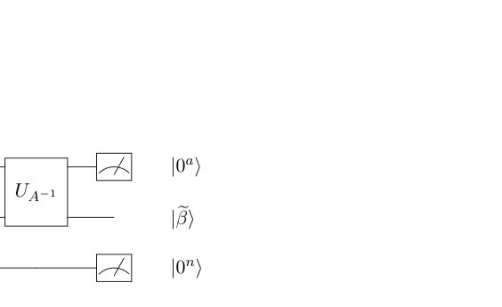
<figcaption class="paper-figure-caption"><b>Fig 1.</b> Figure 1: Circuit for preparing the state |eβ⟩.</figcaption>
</figure>
</div>

<p><strong>Summary.</strong> This paper establishes a general theoretical framework for performing quantum state tomography when the unknown state has a low-complexity decomposition over a structured model class. By boosting weak agnostic learners, the authors derive efficient algorithms that estimate the state with bounded error, providing significant advances over previous methods that required full access to the state preparation unitary.</p>
<p><strong>Why it may be interesting.</strong> The work provides powerful tools to characterize and learn complex quantum states based on their underlying structure, which is crucial for understanding resource limitations in quantum computation protocols.</p>
<details>
<summary>Detailed structure</summary>
<p><strong>Main problem.</strong> Developing a general framework for quantum state tomography when the unknown state $|\psi
angle$ is assumed to have a 'bounded extent' with respect to a structured class of states $C$. This addresses efficiently learning an unknown quantum state that admits a low-complexity decomposition over $C$.</p>
<p><strong>Main result.</strong> The authors provide algorithmic protocols for tomography achieving $\epsilon$-error estimation, showing that the weak agnostic learner can be boosted into a strong algorithm. For stabilizer states, this is achieved in quasipolynomial time.</p>
<p><strong>Method.</strong> The core method involves leveraging the existence of a weak agnostic learner for $C$ and applying an algorithmic decomposition theorem to reconstruct $|\psi
angle$. This process uses techniques like ridge projection and boosting from computational learning theory.</p>
<p><strong>Model / system.</strong> The system is general quantum states, specifically focusing on $n$-qubit systems. The structure is formalized by a class of states $C$ (e.g., stabilizer states, MPS states), and the complexity is measured by the 'bounded extent' $\xi$.</p>
<p><strong>Key observables.</strong> Fidelity ($F_C(|\psi
angle)$), trace distance ($\epsilon$), Stabilizer extent ($\xi$).</p>
<p><strong>Important parameters / regimes.</strong> Number of qubits ($n$), Extent bound ($\xi$), Error tolerance ($\epsilon$), Sample complexity, Time complexity.</p>
<p><strong>Assumptions / limitations.</strong> The results rely on $|\psi
angle$ admitting a low-complexity decomposition over $C$, and the best polynomial bounds assume the algorithmic PFR conjecture.</p>
<p><strong>Paper structure.</strong> The paper builds from general framework development (Chunk 1) to specific algorithms for structure learning and parameter estimation using ridge projectors (Chunk 2). It details protocols for various structured classes like stabilizer states and MPS (Chunks 3, 5, 6), while also providing rigorous mathematical analysis of the projection process and condition number bounds (Chunks 7, 8).</p>
</details>
<details>
<summary>Abstract</summary>
<p>We give a general framework for tomography of states that have bounded-extent with respect to a structured class of states. Let $\textsf{C}$ be a family of $n$-qubit states such that: $(i)$ $\textsf{C}$ is succinctly representable and $(ii)$ there is a weak agnostic learner of $\textsf{C}$. We give a tomography protocol for an unknown state $|ψ\rangle$ that is promised to admit a decomposition of the form $|ψ\rangle = \sum_i c_i |φ_i\rangle$, where $|φ_i\rangle \in \textsf{C}$ with bounded $\ell_1$-norm of the coefficients (which we call extent). Our main contribution is to show that a weak agnostic learner for $\textsf{C}$ can be boosted into a tomography algorithm for states with bounded extent with respect to $\textsf{C}$.   Our reduction is black-box and applies broadly across model classes. As an application, when $\textsf{C}$ is the class of stabilizer states, we obtain tomography algorithms for states with stabilizer extent $ξ$ up to trace distance $\varepsilon$, in time $\textsf{poly}(n,(ξ/\varepsilon)^{\log(ξ/\varepsilon)})$, which is improvable to $ \textsf{poly}(n,ξ,1/\varepsilon)$ assuming the algorithmic polynomial Freiman-Ruzsa conjecture in the high-doubling regime. When the unknown state $|ψ\rangle$ is arbitrary, we give an algorithmic decomposition result in the spirit of a weak regularity lemma for quantum states with respect to $\textsf{C}$ and show that the structure in $|ψ\rangle$ that is explainable by $\textsf{C}$ can be efficiently learned. Our main conceptual message is that agnostic learning of a structured base class automatically yields learnability of its low-complexity linear span.</p>
</details>
<p><sub><a href="#top">↑ back to top</a></sub></p>

<p><a id="paper-2606.07197"></a></p>
<h3 id="on-the-true-low-energy-excitations-of-the-three-dimensional-spin-glass"><a href="http://arxiv.org/abs/2606.07197v1">On the true low-energy excitations of the three-dimensional spin glass</a></h3>
<p><strong>Authors:</strong> Claudio Chilin, Enzo Marinari, Víctor Martín-Mayor, Giorgio Parisi, Juan J. Ruiz-Lorenzo, David Yllanes<br>
<strong>Type:</strong> theory · <strong>Category:</strong> disordered systems and neural networks · <strong>PDF:</strong> <a href="https://arxiv.org/pdf/2606.07197v1">https://arxiv.org/pdf/2606.07197v1</a><br>
<strong>Analysis basis:</strong> full PDF text, analyzed in chunks
<strong>Topic relevance:</strong> <code>exotic spin models in light-matter</code> <strong>3/5</strong> · <code>analog quantum simulation</code> <strong>2/5</strong> · <code>Keldysh / 2PI / non-Gaussian methods</code> <strong>1/5</strong> · <code>driven-dissipative phase transition</code> <strong>1/5</strong> · <code>methods for driven-dissipative</code> <strong>1/5</strong></p>
<div class="figure-strip-hint">↔ Scroll figures horizontally</div>
<div class="paper-figures-scroll">
<figure class="paper-figure-card">
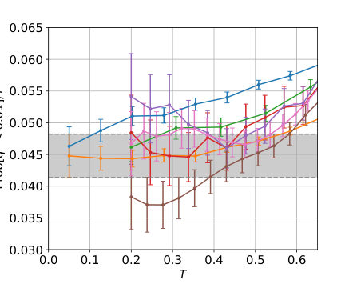
<figcaption class="paper-figure-caption"><b>Fig 1.</b> Figure 1: Parisi-Toulouse scaling. Temperature and size dependence for the cumu- lative probability Prob[q2 &lt; 0.01], see Eq. (16), which provides a numerically stable estimate of P(q = 0). Left: Prob[q2 &lt; 0.01] versus temperature, as computed for all our fully equilibrated lattice sizes. Right: Closeup of the T ∈[0,0.65] region, where we show Prob[q2 &lt; 0.01]/T; PaT scaling predicts that Prob[q2 &lt; 0.01]/T should be temperature independent. The grey horizontal band corresponds to Prob[q2 &lt; 0.01; L = 6, T = 0.05] plus or minus its error. Excepting L = 4, all our data is compatible with this band if T &lt; 0.5. The key is common to the two panels.</figcaption>
</figure>
<figure class="paper-figure-card">
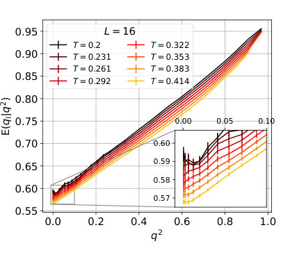
<figcaption class="paper-figure-caption"><b>Fig 2.</b> Figure 2: Link overlap as a function of q2. Plot of E(ql|q2), see Eq. (7), as com- puted for the lowest temperatures and for the biggest sizes we have simulated. In both panels errors are computed using a jackknife method. Left: estimate of E(ql|q2) for L = 14,16,18 at T = 0.2. Right: estimate of E(ql|q2) for L = 16 at various temperatures. The inset shows a closeup of the highlighted box.</figcaption>
</figure>
<figure class="paper-figure-card">
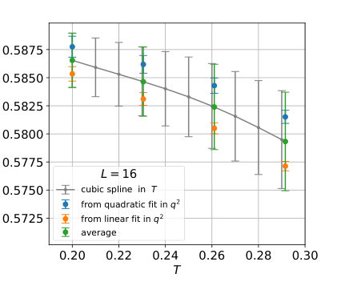
<figcaption class="paper-figure-caption"><b>Fig 3.</b> Figure 3: Extrapolating E(ql|q2) to q2 = 0. Through the procedure explained in Sec. 3.2 we get interpolated data points for equally spaced temperatures 0.2 ≤T &lt; 0.3. Left: E(ql|q2) at T = 0.2 for different linear sizes L. Dots repre- sent the measurements, dashed lines are fits to a linear function, solid lines are fits to a quadratic function. In order to get cleaner results, fits have been restricted to the intervals shown in Appendix A.2. Right: E(ql|q2 = 0) for L = 16 at different temperatures T. Blue and orange dots are the values of the intercepts obtained from the fits. Green dots are the average between the two, as explained in the main text. The grey curve is the cubic-spline...</figcaption>
</figure>
<figure class="paper-figure-card">
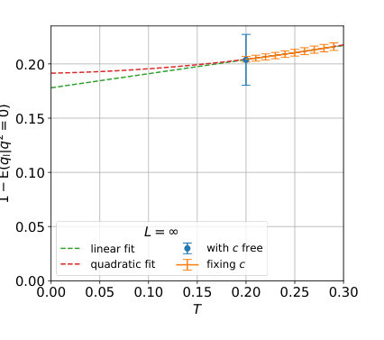
<figcaption class="paper-figure-caption"><b>Fig 4.</b> Figure 4: Taking the successive L →∞and T →0 limits. Left: E(ql|q2 = 0) for T = 0.2 as a function of 1/L. The dashed line is the fit of these points to Eq. (20). The resulting parameters, along with the goodness-of-fit metrics, are reported in Table 2. Right: L →∞values from fits of data at different temperatures to ansatz (20). The blue dot represents the result from the fit shown in the left panel, the orange dots are obtained by fitting the interpolated data to the same function but fixing parameter c to the value in Table 2. Green and red dashed lines are the linear and quadratic fits of the orange points, respectively.</figcaption>
</figure>
<figure class="paper-figure-card">
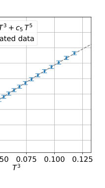
<figcaption class="paper-figure-caption"><b>Fig 5.</b> Figure 5: Energy density as a function of T. Plot of our extrapolations for the thermodynamic limit of the energy density e∞(T) obtained at fixed T from the fit to Eq. (24). The grey dashed line is a fit to Eq. (27), the corresponding values and accuracy parameters are reported in Table 3.</figcaption>
</figure>
</div>

<p><strong>Summary.</strong> This work uses large-scale Monte Carlo simulations to investigate the low-energy excitations of 3D spin glasses. By extrapolating results down to zero temperature, the authors find that Replica-Symmetry Breaking theory provides the best fit for key scaling parameters. The findings offer strong numerical confirmation of the overlap-equivalence hypothesis in disordered magnetic systems.</p>
<p><strong>Why it may be interesting.</strong> While focused on classical statistical mechanics, the rigorous numerical techniques used for extrapolation and phase boundary determination are highly relevant to understanding complex energy landscapes in quantum many-body systems, particularly those exhibiting glassy behavior.</p>
<details>
<summary>Detailed structure</summary>
<p><strong>Main problem.</strong> The study aims to determine which theoretical framework (RSB, DM, CP, or TNT) correctly describes the low-energy excitations of three-dimensional spin glasses.</p>
<p><strong>Main result.</strong> The simulations provide strong evidence supporting the Replica-Symmetry Breaking theory for the fractal dimension and confirm the overlap-equivalence hypothesis through smooth extrapolations to zero temperature.</p>
<p><strong>Method.</strong> Large-scale Monte Carlo simulations are performed on lattices up to L=18, involving complex extrapolation techniques to reach the thermodynamic limit (L-&gt;infinity) and zero temperature (T-&gt;0).</p>
<p><strong>Model / system.</strong> The system studied is a three-dimensional spin glass (Edwards-Anderson type), modeled by Ising spins ($\sigma_i = \pm 1$) interacting via random couplings ($J_{ij}$). The analysis focuses on the behavior of the spin overlap parameter $q$ and the link overlap $q_l$.</p>
<p><strong>Key observables.</strong> Spin overlap ($q$), link overlap ($q_l$), energy density ($\langle H/V 
angle$), fractal dimension ($d_f$), and the probability distribution $P(q)$.</p>
<p><strong>Important parameters / regimes.</strong> System size L (up to 18), Temperature T (extrapolated down to zero), Dimension D=3.</p>
<p><strong>Assumptions / limitations.</strong> Key assumptions include the commutativity of limits ($T 	o 0$ and $L 	o \infty$) and the overlap-equivalence hypothesis, which links link overlap to the spin overlap.</p>
<p><strong>Figures summary.</strong> Figures illustrate Parisi-Toulouse scaling for $P(q)$ vs T, and show extrapolations of $E(q_l|q_2=0)$ versus system size L and temperature T using various fitting ansatze.</p>
<p><strong>Paper structure.</strong> The paper progresses by defining the physical problem (low-energy excitations), detailing observables ($q, q_l$), presenting simulation results showing smooth extrapolations to $T=0$, and finally comparing these findings against predictions from established theoretical frameworks like RSB theory.</p>
</details>
<details>
<summary>Abstract</summary>
<p>We study the low-energy excitations of the three dimensional spin glass through a large-scale Monte Carlo simulation on lattices up to $L=18$. We find smooth extrapolations down to zero temperature, which, in the case of the energy and of the link overlap, can be directly -- and favourably -- compared with previous investigations featuring ground states (i.e., at zero temperature). The best fit for the fractal dimension of the excitations is provided by Replica-Symmetry Breaking theory, but we also consider the alternative TNT description. The $P(q)$ is found to verify the Parisi-Toulouse temperature scaling. Our data provides a spectacular confirmation of the overlap-equivalence hypothesis.</p>
</details>
<p><sub><a href="#top">↑ back to top</a></sub></p>

<p><a id="paper-2606.07269"></a></p>
<h3 id="elucidating-the-control-of-circular-dichroism-in-ion-yield-via-chirped-pulses-with-purposeful-models"><a href="http://arxiv.org/abs/2606.07269v1">Elucidating the Control of Circular Dichroism in Ion Yield via Chirped Pulses with Purposeful Models</a></h3>
<p><strong>Authors:</strong> Leon A. Kerber, Daniel M. Reich<br>
<strong>Type:</strong> theory · <strong>Category:</strong> other · <strong>PDF:</strong> <a href="https://arxiv.org/pdf/2606.07269v1">https://arxiv.org/pdf/2606.07269v1</a><br>
<strong>Analysis basis:</strong> full PDF text, analyzed in chunks
<strong>Topic relevance:</strong> <code>methods for driven-dissipative</code> <strong>3/5</strong> · <code>non-equilibrium dynamics</code> <strong>2/5</strong> · <code>Keldysh / 2PI / non-Gaussian methods</code> <strong>1/5</strong> · <code>interference shaping light</code> <strong>1/5</strong></p>
<div class="figure-strip-hint">↔ Scroll figures horizontally</div>
<div class="paper-figures-scroll">
<figure class="paper-figure-card">
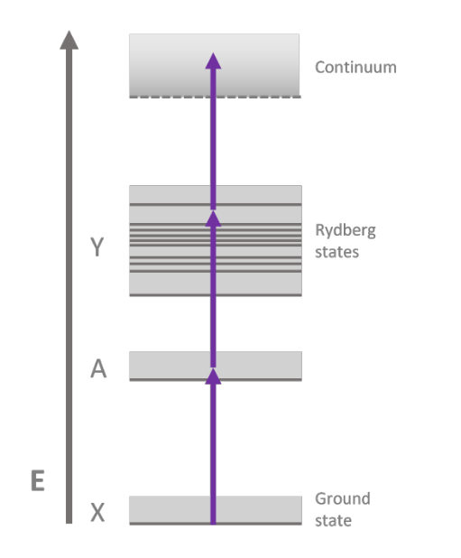
<figcaption class="paper-figure-caption"><b>Fig 1.</b> FIG. 1. The 1 + 1 + 1 ionization scheme of 3MCP examined within this work. The absorption of a first photon excites the molecule to the A band. In a second absorption step, the molecule is promoted to one of ten Rydberg states [38]. Absorption of the third photon leads to ionization. The ion- ization step is treated effectively in our work.</figcaption>
</figure>
<figure class="paper-figure-card">
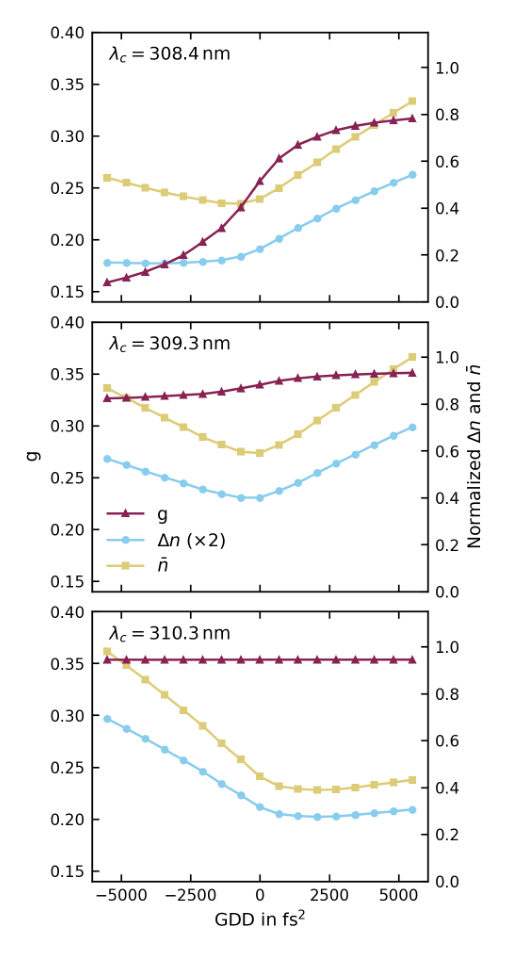
<figcaption class="paper-figure-caption"><b>Fig 2.</b> FIG. 2. Results for the “minimal model”. Dependence of the anisotropy factor (g, left axis), CD and ABS (∆n and ¯n, right axis) on the applied GDD for three different central wavelengths of the linearly chirped laser pulse.</figcaption>
</figure>
<figure class="paper-figure-card">
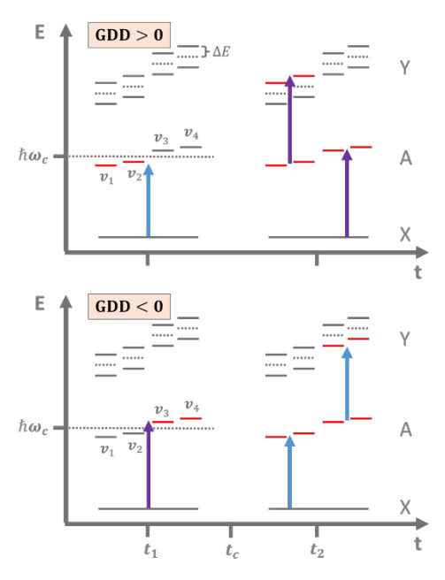
<figcaption class="paper-figure-caption"><b>Fig 3.</b> FIG. 3. Schematic illustration of the preferential enhance- ment of pathways for the case of a central pulse frequency (ωc) which energetically lies in between the two intense (A(v1), A(v2)) and the two weak transitions (A(v3), A(v4)), as in the upper two panels of Fig. 2. States in the same column are coupled with each other: each A band state (at energy EA(v)) is coupled to two Y band states at energies 2EA(v) ± ∆E. The excitation process is shown at two points in time t1 and t2, before and after the pulse center tc. For positive chirp (GDD &gt; 0), low frequencies (blue), resonant with the intense transitions, arrive first, enhancing subsequent population (red bars) of the corresponding...</figcaption>
</figure>
<figure class="paper-figure-card">
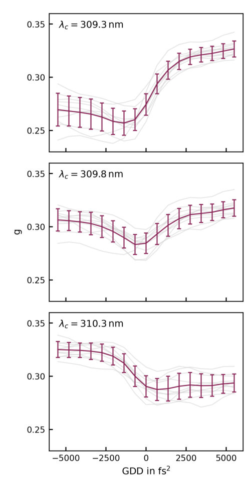
<figcaption class="paper-figure-caption"><b>Fig 4.</b> FIG. 4. Results for the “randomized model”. Dependence of the anisotropy factor on the applied GDD for three different central wavelengths of the linearly chirped laser pulse for the equatorial conformer of 3MCP.</figcaption>
</figure>
<figure class="paper-figure-card">
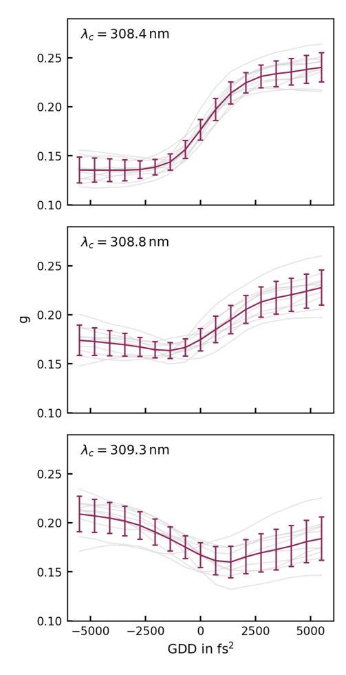
<figcaption class="paper-figure-caption"><b>Fig 5.</b> FIG. 5. Results for the “randomized model”. Dependence of the anisotropy factor on the applied GDD for three differ- ent central wavelengths of the linearly chirped laser pulse for 3MCP. The results correspond to a mixture of 78:22 equato- rial and axial conformers as in Ref. [24].</figcaption>
</figure>
</div>

<p><strong>Summary.</strong> The paper theoretically investigates the control of circular dichroism observed during the ionization of 3-methylcyclopentanone using chirped laser pulses. By solving the time-dependent Schrödinger equation within sophisticated quantum models, the authors pinpoint that the interaction between sequential absorption steps is responsible for the chirp dependence of the measured anisotropy. This provides a detailed mechanism for controlling chiral signals in molecular physics.</p>
<p><strong>Why it may be interesting.</strong> This work is highly relevant as it uses advanced quantum dynamics simulations (TDSE) to model coherent control in molecular spectroscopy, specifically demonstrating how sequential resonance pathways dictate measurable chiral properties like CDIY.</p>
<details>
<summary>Detailed structure</summary>
<p><strong>Main problem.</strong> The study aims to theoretically elucidate how circular dichroism (CD) in the ion yield, resulting from a three-step ionization process ($1+1+1$), can be controlled by using femtosecond linearly chirped laser pulses.</p>
<p><strong>Main result.</strong> The anisotropy factor's dependence on chirp is governed by the interplay between the first and second absorption steps; randomized models successfully reproduce the qualitative features of this chirp enhancement, confirming a sequential resonance mechanism.</p>
<p><strong>Method.</strong> The authors numerically solve the time-dependent Schrödinger equation to track molecular excitation dynamics through multiple absorption steps using both minimal and randomized quantum models.</p>
<p><strong>Model / system.</strong> The system is 3-methylcyclopentanone (3MCP) undergoing $1+1+1$ ionization. The Hamiltonian governs the time evolution, incorporating field-free molecular terms and dipole interactions for sequential excitation from ground state to A-band vibronic states, then to Rydberg states.</p>
<p><strong>Key observables.</strong> Circular Dichroism in Ion Yield (CDIY), Anisotropy Factor ($g$), population distributions in Rydberg states.</p>
<p><strong>Important parameters / regimes.</strong> Linearly chirped laser pulses characterized by Group Delay Dispersion (GDD); central wavelengths ($\lambda_c$); temperature (for conformational averaging).</p>
<p><strong>Assumptions / limitations.</strong> The second absorption step is modeled using effective approaches, and rotational degrees of freedom are sometimes neglected or simplified to a linear rotor for estimation.</p>
<p><strong>Figures summary.</strong> Figures illustrate the $1+1+1$ ionization scheme; subsequent figures show how the anisotropy factor changes with GDD (chirp) in both minimal and randomized models, and how conformational averaging improves quantitative agreement.</p>
<p><strong>Paper structure.</strong> The paper establishes the theoretical framework using the time-dependent Schrödinger equation for multi-step excitation. It develops simplified 'minimal' and complex 'randomized' models to isolate physical mechanisms. Finally, it applies these models to analyze the dependence of CDIY on laser chirp and molecular conformation.</p>
</details>
<details>
<summary>Abstract</summary>
<p>We theoretically investigate circular dichroism in the ion yield following $1+1+1$ ionization of 3-methylcyclopentanone using femtosecond linearly chirped laser pulses, inspired by recent experiments by Das et al. [Phys. Chem. Chem. Phys. 27, 8043 (2025)]. To this end, we numerically solve the time-dependent Schrödinger equation and evaluate the total population in the Rydberg states at the end of the second absorption step. The A-band transition in the first absorption step is treated using state-of-the-art quantum-chemical calculations, whereas the second absorption step is described via an effective model. Within our framework, we identify the interplay between the first and second absorption step as the key explanation for the experimentally observed chirp dependence of the anisotropy. By elucidating this mechanism for the chirp-enhanced signal, our findings contribute towards the development of improved control schemes for chiral molecules.</p>
</details>
<p><sub><a href="#top">↑ back to top</a></sub></p>

<p><a id="paper-2606.06678"></a></p>
<h3 id="field-rigid-ising-antiferromagnetism-with-giant-spin-flip-fields-in-van-der-waals-uote"><a href="http://arxiv.org/abs/2606.06678v1">Field-rigid Ising antiferromagnetism with giant spin-flip fields in Van der Waals UOTe</a></h3>
<p><strong>Authors:</strong> Zackary Rehfuss, Shannon Gould, Joanna Blawat, Christopher Broyles, George Xu, Yiqing Hao, Huibo Cao, Thao Dinh, Suyang Xu, Dave Graf, John Singleton, Sheng Ran<br>
<strong>Type:</strong> experiment · <strong>Category:</strong> strongly correlated electrons · <strong>PDF:</strong> <a href="https://arxiv.org/pdf/2606.06678v1">https://arxiv.org/pdf/2606.06678v1</a><br>
<strong>Analysis basis:</strong> full PDF text, analyzed in chunks
<strong>Topic relevance:</strong> <code>Kondo &amp; dissipative impurity</code> <strong>3/5</strong> · <code>analog quantum simulation</code> <strong>1/5</strong> · <code>exotic spin models in light-matter</code> <strong>1/5</strong> · <code>spintronics-quantum-optics interface</code> <strong>1/5</strong></p>
<div class="figure-strip-hint">↔ Scroll figures horizontally</div>
<div class="paper-figures-scroll">
<figure class="paper-figure-card">
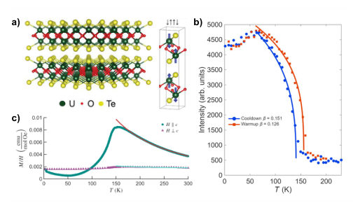
<figcaption class="paper-figure-caption"><b>Fig 1.</b> FIG. 1. a) Crystal and magnetic structure of UOTe. Left, cross-sectional view of the layered structure, showing the Te- terminated Van der Waals gaps between neighboring struc- tural units. Right, magnetic structure showing the doubled magnetic unit cell with the ↓↑↑↓arrangement. b) Temper- ature dependence of the magnetic Bragg peak intensity at Q = (1, 0, 0.5). Data were collected in 5 K steps, with each point integrated for 1 minute after a 1 minute equilibration period. Solid lines are fits to a critical scaling form, and the extracted values of β are listed in the legend. The fitted values are close to the two-dimensional Ising limit. c) Temperature dependence of the magnetic...</figcaption>
</figure>
<figure class="paper-figure-card">
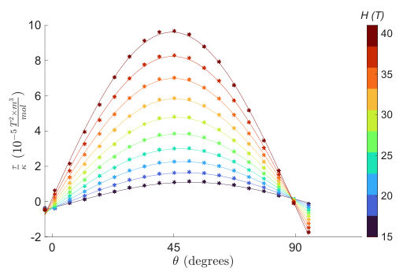
<figcaption class="paper-figure-caption"><b>Fig 2.</b> FIG. 2. Angular cuts through the torque data. Rep- resentative angular cuts extracted from the torque data at fixed magnetic fields. Solid lines are fits to the sin(2θ) angular dependence expected for a uniaxial two-sublattice antiferro- magnet, τ ∝∆χH2 sin(2θ). The agreement shows that the angular response remains consistent with a simple uniaxial antiferromagnetic state throughout the measured field range.</figcaption>
</figure>
<figure class="paper-figure-card">
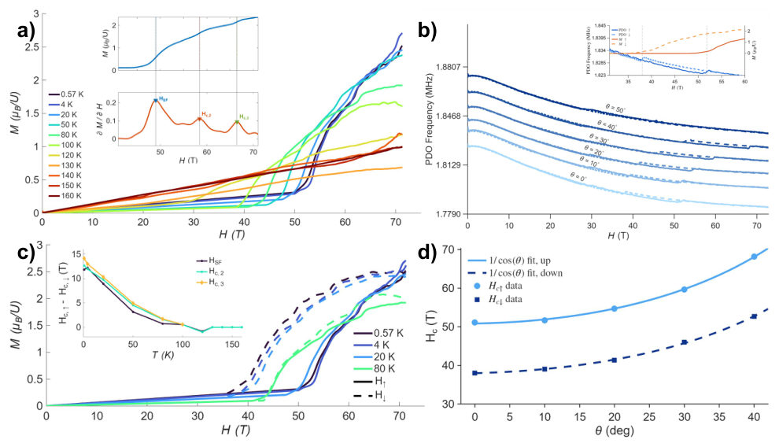
<figcaption class="paper-figure-caption"><b>Fig 3.</b> FIG. 3. a) Magnetization of UOTe as a function of field for temperatures from 570 mK to 160 K, measured in pulsed fields up to 73 T. The data were normalized using vibrating sample magnetometer measurements from earlier experiments. The inset shows an expanded view of the spin-flip transition and its field derivative, highlighting the three peaks used to track the phase boundary. b) PDO frequency shift as a function of field at 570 mK for field angles measured with respect to the c axis. A clear transition is observed, and the inset compares the PDO response with the magnetization data near the onset of the spin-flip transition. The critical field increases with angle from 0◦to 50◦, beyond...</figcaption>
</figure>
<figure class="paper-figure-card">
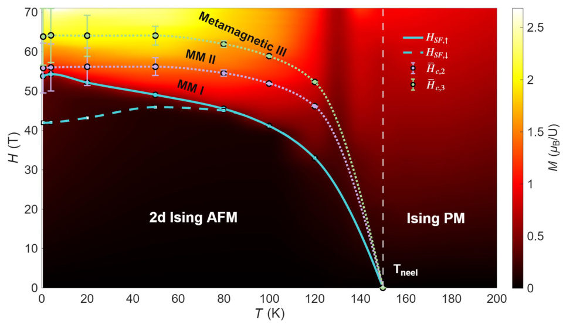
<figcaption class="paper-figure-caption"><b>Fig 4.</b> FIG. 4. Magnetic field-temperature phase diagram of UOTe constructed from pulsed-field magnetization and PDO measure- ments, together with neutron scattering, magnetic susceptibility, and torque magnetometry. Above TN ≈150 K, UOTe is in the paramagnetic state. Below TN, at least three field-induced branches emerge from the metamagnetic transition region and define the evolution of the ordered state with temperature and field. The blue boundary marks the spin-flip transition, with separate up-sweep and down-sweep values shown where hysteresis is resolved. The green and pink branches correspond to the higher-field derivative features identified from the magnetization data. Vertical bars...</figcaption>
</figure>
<figure class="paper-figure-card">
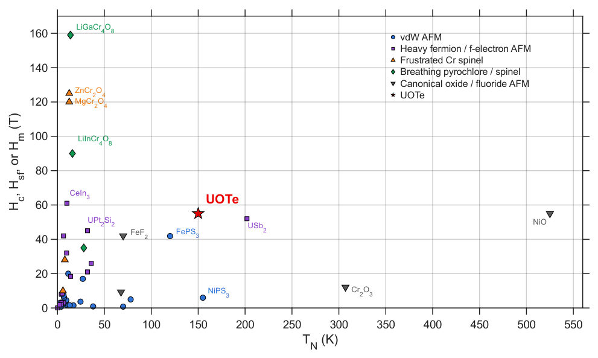
<figcaption class="paper-figure-caption"><b>Fig 5.</b> FIG. 5. Critical field scale plotted against N´eel temperature for a representative set of antiferromagnetic materials. The vertical axis denotes the reported spin-flip field, spin-flop field, metamagnetic field, or other relevant critical field, labeled here as Hc, Hsf, or Hm. The comparison includes compounds from Van der Waals antiferromagnets, heavy-fermion and other f-electron antiferromagnets, frustrated chromium spinels, breathing pyrochlore or spinel antiferromagnets, and canonical oxide or fluoride antiferromagnets. Literature values used to construct the comparison are taken from Refs. [16, 17, 20, 22, 32–36, 38–43, 52, 69– 85].</figcaption>
</figure>
</div>

<p><strong>Summary.</strong> This work investigates UOTe, a Van der Waals antiferromagnet that combines metallic conduction with strong magnetic anisotropy and quasi-2D Ising order. Through extensive measurements up to 73 T, the authors demonstrate that the material maintains its field-rigid Ising character even when entering a complex metamagnetic state at high fields. This establishes UOTe as a unique platform for studying correlated magnetism in low dimensions.</p>
<p><strong>Why it may be interesting.</strong> The combination of extreme magnetic field studies (up to 73 T) on a correlated electron system within a van der Waals structure is highly relevant. The persistence of Ising rigidity into the high-field regime provides insights into quantum phase transitions in strongly interacting, low-dimensional magnets.</p>
<details>
<summary>Detailed structure</summary>
<p><strong>Main problem.</strong> To characterize a Van der Waals antiferromagnet exhibiting field-rigid Ising behavior alongside metallic, correlated electronic structure.</p>
<p><strong>Main result.</strong> UOTe establishes a unique platform where high-temperature c-axis order, quasi-2D Ising criticality, and Kondo hybridization coexist, with the magnetic rigidity persisting into a broad, high-field metamagnetic regime.</p>
<p><strong>Method.</strong> The study employs a combination of techniques including neutron diffraction, temperature/angle-dependent susceptibility measurements, torque magnetometry, and pulsed-field magnetization up to 73 T.</p>
<p><strong>Model / system.</strong> The physical system is UOTe, a compensated Van der Waals material. It exhibits strong magnetic anisotropy, quasi-two-dimensional Ising antiferromagnetism below $T_N \approx 150$ K, and metallic transport linked to Kondo-associated uranium 5f hybridization.</p>
<p><strong>Key observables.</strong> Magnetic susceptibility ($\chi(T)$), critical exponent $eta$, torque ($    au$), pulsed magnetization ($M(H)$), and angle dependence of the metamagnetic instability field component ($H_c(    heta) \propto \cos  heta$).</p>
<p><strong>Important parameters / regimes.</strong> Critical exponent $eta \approx 0.14$ (near 2D Ising value); high-field regime onset near 50 T; $T_N \simeq 150$ K.</p>
<p><strong>Assumptions / limitations.</strong> The analysis assumes the magnetic response can be modeled by uniaxial antiferromagnetism and that the high-field instability is governed by the field component along the ordered moment direction.</p>
<p><strong>Figures summary.</strong> Figures illustrate crystal structure, temperature dependence of magnetic Bragg peak intensity showing 2D Ising scaling, $\chi(T)$ anisotropy, angular cuts through torque data confirming uniaxiality, and $M(H)$ curves revealing a broad, hysteretic metamagnetic reconstruction rather than a simple spin flip.</p>
<p><strong>Paper structure.</strong> The paper systematically establishes the material's magnetic anisotropy via susceptibility measurements, confirms 2D Ising critical behavior using neutron diffraction, verifies the uniaxial nature of the ordered state with torque magnetometry, and finally probes the high-field stability and metamagnetic reconstruction using pulsed-field magnetization and angle-dependent PDO measurements.</p>
</details>
<details>
<summary>Abstract</summary>
<p>Van der Waals antiferromagnets provide a route to thickness-controlled magnetic order, but few combine high-temperature Ising order with conducting, correlated, and topological electronic structure. Here we show that UOTe realizes this combination. Magnetic susceptibility reveals a strongly anisotropic paramagnetic response, while neutron diffraction establishes c-axis antiferromagnetic order below $T_N \simeq 150$ K with an order-parameter exponent $β= 0.14$, close to the two-dimensional Ising value. Torque magnetometry further shows that the ordered state remains well described by a uniaxial antiferromagnet below the high-field transition. Pulsed-field magnetization up to 73 T shows that the ordered state survives to very large fields applied along the c axis before entering a broad metamagnetic regime that begins near 50 T, and remains unsaturated at the highest measured field. Angle-dependent proximity detector oscillator measurements show that the metamagnetic instability is set by the field component along the ordered moment direction, providing direct evidence for Ising-like field rigidity. UOTe therefore establishes a field-rigid Ising antiferromagnet with giant spin-flip fields in a compensated Van der Waals metal, where high-temperature c-axis order, quasi-two-dimensional magnetic criticality, Kondo-associated uranium 5f hybridization, metallic transport, and symmetry-enabled topology coexist in a single material.</p>
</details>
<p><sub><a href="#top">↑ back to top</a></sub></p>

<p><a id="paper-2606.06874"></a></p>
<h3 id="impact-of-capacity-volatility-and-input-substitutability-on-supply-chain-resilience"><a href="http://arxiv.org/abs/2606.06874v1">Impact of capacity volatility and input substitutability on supply chain resilience</a></h3>
<p><strong>Authors:</strong> Jaeseok Hur, Juha Jang, Meesoon Ha, Hawoong Jeong<br>
<strong>Type:</strong> theory · <strong>Category:</strong> statistical mechanics · <strong>PDF:</strong> <a href="https://arxiv.org/pdf/2606.06874v1">https://arxiv.org/pdf/2606.06874v1</a><br>
<strong>Analysis basis:</strong> full PDF text, analyzed in chunks
<strong>Topic relevance:</strong> <code>driven-dissipative phase transition</code> <strong>2/5</strong> · <code>non-equilibrium dynamics</code> <strong>2/5</strong> · <code>non-equilibrium universality</code> <strong>2/5</strong> · <code>Frenkel-Kontorova</code> <strong>1/5</strong> · <code>Keldysh / 2PI / non-Gaussian methods</code> <strong>1/5</strong> · <code>analog quantum simulation</code> <strong>1/5</strong> · <code>correlated / nonlocal dissipation</code> <strong>1/5</strong> · <code>entanglement &amp; information structure</code> <strong>1/5</strong> · <code>methods for driven-dissipative</code> <strong>1/5</strong></p>
<div class="figure-strip-hint">↔ Scroll figures horizontally</div>
<div class="paper-figures-scroll">
<figure class="paper-figure-card">
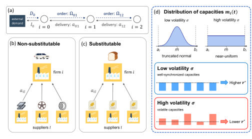
<figcaption class="paper-figure-caption"><b>Fig 1.</b> FIG. 1. Schematic illustration of order-delivery process and two different inputs: (a) Order propagation (dashed line ar- rows) and delivery (solid line arrows) processes in 1D supply chains with two levels from root to leaf node. Conceptual comparison of (b) non-substitutable production to (c) substi- tutable production. Automobile production requires distinct inputs, such as steel, steering wheels, and tires, from different suppliers, whereas bread production can use compatible in- puts, such as flour, supplied by multiple firms. (d) Production- capacity distributions with different volatility σ. As σ in- creases, the truncated normal distribution (left) approaches a near-uniform...</figcaption>
</figure>
<figure class="paper-figure-card">
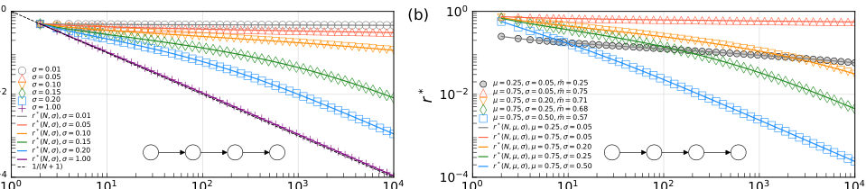
<figcaption class="paper-figure-caption"><b>Fig 2.</b> FIG. 2. Critical demand r∗(N, σ) of 1D supply chains with no stock capacity and truncated-normal production capacities as a function of supply chain length N and volatility σ. Dots represent numerical simulation results and solid lines represent the analytical expressions in Eqs. (10) and (A3), evaluated by numerical integration. (a) Capacity distributions with the same location parameter µ = 1/2 and different values of σ. For small σ, production is nearly deterministic and r∗depends weakly on N. In the large-σ limit, it approaches the baseline r∗= 1/(N + 1) for a uniform capacity distribution. (b) Different values of µ. Gray circle symbols represent µ = 0.25 and other open symbols...</figcaption>
</figure>
<figure class="paper-figure-card">
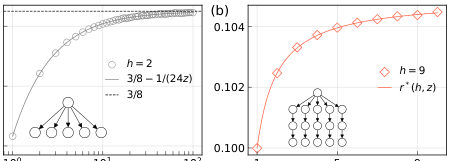
<figcaption class="paper-figure-caption"><b>Fig 3.</b> FIG. 3. Critical demand r∗against the number of substitute suppliers z. (a) Regular trees with h = 2. (b) Multiple-chain structure (h = 9), under no stock capacity, and a Leontief production function with substitutable inputs. Open symbols represent numerical simulation results, and the solid line rep- resents the analytical result in Eqs. (19) and (20). r∗increases monotonically with a branching factor z. The insets show schematic illustrations of the network settings.</figcaption>
</figure>
<figure class="paper-figure-card">

<figcaption class="paper-figure-caption"><b>Fig 4.</b> FIG. 4. Critical demand r∗against height h, under no stock capacity and a Leontief production function with substi- tutable inputs. Symbols represent numerical simulation re- sults for (a) regular-tree structure with various z and (b) regular-lattice structure with the number of nodes and links, (M, K) in each lattice layer, respectively. The insets show schematic illustrations of the network settings.</figcaption>
</figure>
</div>

<p><strong>Summary.</strong> This paper models supply chain resilience by studying how random production capacity fluctuations and input substitutability affect the system's critical demand. It finds that managing volatility (synchronization) and diversifying suppliers are crucial for maintaining stability, even more so than simply increasing average resource availability.</p>
<p><strong>Why it may be interesting.</strong> While applied to economics/operations research, the mathematical framework involves stochastic processes and network flow constraints that share conceptual parallels with analyzing energy or information flow bottlenecks in complex quantum systems.</p>
<details>
<summary>Detailed structure</summary>
<p><strong>Main problem.</strong> The paper investigates how capacity volatility and input substitutability affect critical demands (resilience) within stochastic supply chains, extending the Feld-Barthelemy framework.</p>
<p><strong>Main result.</strong> Reducing production-capacity volatility is often more effective than increasing average capacity in long chains, while structural diversification via substitute suppliers significantly enhances resilience by dispersing shocks.</p>
<p><strong>Method.</strong> The analysis uses theoretical modeling based on Directed Acyclic Graphs (DAGs) to derive expressions for critical demand ($r^*$) under various stochastic assumptions.</p>
<p><strong>Model / system.</strong> The system is a supply chain modeled as a DAG where production capacity $m_i(t)$ is random. The core dynamics involve order propagation, constrained production via a Leontief-type function, and stock updates.</p>
<p><strong>Key observables.</strong> Critical Demand ($r^*$), which represents the maximum sustainable demand rate of the root node.</p>
<p><strong>Important parameters / regimes.</strong> Capacity volatility ($\sigma$), average capacity ($\mu$), supply chain length ($N$), and degree of input substitutability (number of suppliers $z$).</p>
<p><strong>Assumptions / limitations.</strong> The analysis often assumes no stock capacity ($s=0$) for key comparisons, and it builds upon the Feld-Barthelemy model assumptions.</p>
<p><strong>Figures summary.</strong> Figures illustrate order/delivery processes in 1D chains, showing how volatility ($\sigma$) impacts $r^*$, and demonstrate that increasing supplier diversification ($z$) raises critical demand in tree structures.</p>
<p><strong>Paper structure.</strong> The paper develops the mathematical framework for stochastic supply chain flow, first analyzing the impact of capacity distribution (e.g., truncated normal) on $r^*$ in non-substitutable chains, then extending this to incorporate input substitutability via a modified Leontief function.</p>
</details>
<details>
<summary>Abstract</summary>
<p>Supply chains are intrinsically vulnerable to stochastic shocks due to their sequential production dependencies. Building on the Feld-Barthelemy framework, we investigate how capacity volatility and input substitutability determine critical demands in stochastic supply chains. By modeling production capacity with a truncated normal distribution, we show that in long supply chains, reducing capacity volatility is often more effective than increasing average capacity, emphasizing the need for firm-level synchronization. Furthermore, introducing a modified Leontief-type production function reveals that input substitutability effectively disperses stochastic shocks. Supplier diversification inherently raises critical demands, even under fixed maximum capacities, by introducing the effect of network topology that independently enhances the resilience of physical stock. Our findings demonstrate that mitigating capacity volatility and structurally diversifying supply routes are just as crucial to supply chain resilience as traditional inventory expansion.</p>
</details>
<p><sub><a href="#top">↑ back to top</a></sub></p>

<p><a id="paper-2606.07002"></a></p>
<h3 id="phase-lag-enhances-synchronization-in-coupled-oscillators-with-inertia"><a href="http://arxiv.org/abs/2606.07002v1">Phase lag enhances synchronization in coupled oscillators with inertia</a></h3>
<p><strong>Authors:</strong> Sudo Yi, Cook Hyun Kim, Heetae Kim, B. Kahng<br>
<strong>Type:</strong> theory · <strong>Category:</strong> statistical mechanics · <strong>PDF:</strong> <a href="https://arxiv.org/pdf/2606.07002v1">https://arxiv.org/pdf/2606.07002v1</a><br>
<strong>Analysis basis:</strong> full PDF text, analyzed in chunks
<strong>Topic relevance:</strong> <code>driven-dissipative phase transition</code> <strong>2/5</strong> · <code>non-equilibrium dynamics</code> <strong>2/5</strong> · <code>non-equilibrium universality</code> <strong>2/5</strong> · <code>Frenkel-Kontorova</code> <strong>1/5</strong> · <code>Keldysh / 2PI / non-Gaussian methods</code> <strong>1/5</strong> · <code>analog quantum simulation</code> <strong>1/5</strong> · <code>correlated / nonlocal dissipation</code> <strong>1/5</strong> · <code>methods for driven-dissipative</code> <strong>1/5</strong></p>
<div class="figure-strip-hint">↔ Scroll figures horizontally</div>
<div class="paper-figures-scroll">
<figure class="paper-figure-card">

<figcaption class="paper-figure-caption"><b>Fig 1.</b> Figure 1: Plot of the order parameter 𝑅for the 2nd KM without (blue) and with (orange) phase lags as a function of the coupling constant 𝐾for (a) 𝑚= 0, (b) 𝑚= 1, and (c) 𝑚= 5 for a single realization (left column). For 𝑚= 0 and 𝑚= 1, imposing a phase lag reduces 𝑅, whereas for 𝑚= 5, 𝑅shows a crossover behavior as 𝐾varies. Close to the transition point 𝐾𝑐, synchronization is enhanced, while for sufficiently large 𝐾it is suppressed. Note also that the transition point 𝐾𝑐is shifted to larger values when the phase lag is introduced. The enhanced synchronization occurs because, in case (c), the boundary of the primary cluster in the 𝜔&gt; 0 region remains fixed [Fig. 2(e)], while the cluster itself...</figcaption>
</figure>
<figure class="paper-figure-card">

<figcaption class="paper-figure-caption"><b>Fig 2.</b> Figure 2: (Left column) Plots of the mean angular velocities of the primary and higher-order synchronized clusters versus intrinsic frequencies for (a) 𝑚= 0, (b) 𝑚= 1, and (c) 𝑚= 5 with 𝑁= 5000, and 𝐾= 5, starting from the phase-lag-free state (𝛼0 = 0) (blue) and after introducing the phase-lag with 𝛼0 = 0.3𝜋in the steady states (orange). In all cases, the phase lag effectively shifts the boundary of the primary cluster—defined by the region in which ⟨̇𝜑𝑖⟩is almost constant with respect to 𝜔𝑖—toward smaller values of 𝜔𝑖. Yet, as illustrated for 𝑚= 5 in (c), if the depinning threshold lies to the right of the original boundary, depinning does not occur and the right boundary is left...</figcaption>
</figure>
<figure class="paper-figure-card">

<figcaption class="paper-figure-caption"><b>Fig 3.</b> Figure 3: Time evolution of the instantaneous frequencies ̇𝜑𝑖(𝑡) of selected oscillators with different intrinsic frequencies 𝜔𝑖, (a) and (b) show the cases 𝑚= 1 and 𝑚= 5, respectively, with 𝑁= 5000, 𝐾= 5, 𝛼0 = 0.3𝜋, and 𝜂= 0.5. For 𝑡&lt; 0, the system evolves without phase lag and is in a steady state. At 𝑡= 0, the phase lag is introduced to an 𝜂fraction of oscillators. The system relaxes to a new steady state within a time scale much shorter than the transient time (1000) used in the simulations.</figcaption>
</figure>
</div>

<p><strong>Summary.</strong> This paper analyzes how controlled external perturbations, specifically applying a symmetry-breaking phase lag, can significantly boost global synchronization in coupled oscillators that possess inertia. By forcing the primary cluster to incorporate secondary frequency clusters, the method reveals a mechanism for actively controlling and improving collective coherence in complex dynamical systems.</p>
<p><strong>Why it may be interesting.</strong> While focused on classical oscillator dynamics, the concept of using an engineered non-conservative perturbation (phase lag) to stabilize or enhance collective order in a complex, multi-cluster state has parallels with controlling quantum phase transitions or stabilizing exotic many-body states.</p>
<details>
<summary>Detailed structure</summary>
<p><strong>Main problem.</strong> The study investigates how applying a controlled phase lag can enhance global synchronization in coupled oscillators that possess inertia, especially when the system naturally exhibits multiple synchronized clusters.</p>
<p><strong>Main result.</strong> Controlled phase lags can enhance global synchronization by steering the primary cluster to merge with higher-order clusters, demonstrating a mechanism for improving entrainment in inertial oscillator networks.</p>
<p><strong>Method.</strong> The analysis uses mean-field theory and quasi-static methods, examining the system's response to varying coupling strengths (K) while incorporating phase lags ($\alpha_i$) on a subset of oscillators.</p>
<p><strong>Model / system.</strong> The model is based on the second-order Kuramoto model with inertia, described by an equation of motion involving second derivatives and damping terms. This system is used as a proxy for physical systems like synchronous machines in power grids.</p>
<p><strong>Key observables.</strong> Order parameter (R), group-based order parameter ($R_g$), mean angular velocity ($\langle\dot{\varphi}_i
angle$) of different clusters, and cluster boundaries determined by pinning/depinning conditions.</p>
<p><strong>Important parameters / regimes.</strong> Inertia magnitude ($m$), coupling constant ($K$), phase lag ($\alpha_0$), and the fraction of oscillators subjected to the lag ($\eta$).</p>
<p><strong>Assumptions / limitations.</strong> The analysis relies on a minimal mean-field demonstration, assuming the existence of primary and higher-order clusters initially. The use of specific approximations for drifting oscillators is also noted.</p>
<p><strong>Figures summary.</strong> Figures illustrate how the order parameter $R$ changes with coupling strength $K$ for different inertia values, showing enhancement near transition points when phase lags are applied. Other figures map mean angular velocities versus intrinsic frequencies to determine cluster boundaries.</p>
<p><strong>Paper structure.</strong> The paper first establishes that inertia lowers synchronization in the 2nd KM compared to simpler models. It then introduces the controlled phase lag perturbation and analyzes how this external control mechanism forces a dynamical reorganization, leading to enhanced global coherence by merging distinct frequency clusters.</p>
</details>
<details>
<summary>Abstract</summary>
<p>The second-order Kuramoto model with inertia exhibits different dynamical behaviors than the first-order KM without inertia. A central difference is its lower synchronization due to the emergence of multiple synchronized clusters with different frequencies. We aim to investigate how such lowered synchronization can be improved by applying external perturbations to the system in a steady state, for example, a symmetry-breaking phase lag to a subset of oscillators. We find that this phase lag steers the primary cluster along a specific path and enables it to merge with higher-order clusters, thereby enhancing global synchronization. Our results reveal a mechanism by which controlled phase lag can improve entrainment in inertial oscillator systems, with possible implications for synchronization control in inertial oscillator networks.</p>
</details>
<p><sub><a href="#top">↑ back to top</a></sub></p>

<p><a id="paper-2606.06759"></a></p>
<h3 id="bures-geodesics-for-non-faithful-states-and-quantum-speed-limit"><a href="http://arxiv.org/abs/2606.06759v1">Bures geodesics for non-faithful states and quantum speed limit</a></h3>
<p><strong>Authors:</strong> Sergio Carrasco, Dominique Spehner<br>
<strong>Type:</strong> theory · <strong>Category:</strong> quantum information and computing · <strong>PDF:</strong> <a href="https://arxiv.org/pdf/2606.06759v1">https://arxiv.org/pdf/2606.06759v1</a><br>
<strong>Analysis basis:</strong> full PDF text, analyzed in chunks
<strong>Topic relevance:</strong> <code>entanglement &amp; information structure</code> <strong>2/5</strong> · <code>non-equilibrium dynamics</code> <strong>2/5</strong> · <code>correlated / nonlocal dissipation</code> <strong>1/5</strong> · <code>driven-dissipative phase transition</code> <strong>1/5</strong> · <code>methods for driven-dissipative</code> <strong>1/5</strong> · <code>non-equilibrium universality</code> <strong>1/5</strong></p>
<div class="figure-strip-hint">↔ Scroll figures horizontally</div>
<div class="paper-figures-scroll">
<figure class="paper-figure-card">

<figcaption class="paper-figure-caption"><b>Fig 1.</b> FIG. 1: (a) Geodesic arcs connecting two faithful non-commuting qubit states, represented on the hypersphere S3</figcaption>
</figure>
<figure class="paper-figure-card">

<figcaption class="paper-figure-caption"><b>Fig 2.</b> FIG. 2: Geodesic arcs joining the perturbed states ρ1(ε1) and ρ2(ε2) of two non-faithful states ρ1 and ρ2 in the regularization method (plain red and blue curves). The regularization paths εi 7→ρi(εi), i = 1, 2, are shown in dashed lines.</figcaption>
</figure>
<figure class="paper-figure-card">

<figcaption class="paper-figure-caption"><b>Fig 3.</b> FIG. 3: Spectrum of γ1→2 g (τ) vs time τ for |z| = 0.5 and |z| = 1.0, showing that for all τ ∈(0, θ), γ1→2 g (τ) has rank 3 in the first case and rank 2 in the second case. The vertical dashed line indicates t = θ and arg(z) = π.</figcaption>
</figure>
<figure class="paper-figure-card">

<figcaption class="paper-figure-caption"><b>Fig 4.</b> FIG. 4: Complex-plane representation of the limit limε→0 z(cm,n) 21 (ε, ε) for the regularization curves (B2) with r = rm and ϕ = ϕn as in (B3). The colored circles and gray rays indicate resp. the radial index m and phase index n. The distribution of points shows that the limiting values fill the closed unit disk. The value r = 1 leads to Fubini geodesics, given by (44) with |z21| = 1 and arbitrary phases ϕ; the values 0 &lt; r &lt; 1 lead to elliptic rank-2 geodesics, and r = 0 corresponds to the rank-2 straight diameter geodesic.</figcaption>
</figure>
</div>

<p><strong>Summary.</strong> This paper rigorously determines the geodesic arcs connecting non-faithful quantum states in the space of density matrices using the Bures metric. It establishes necessary and sufficient conditions for the uniqueness of these shortest paths by analyzing the overlap between state supports and kernels. The results have direct implications for understanding the minimum time required for quantum evolution, thus refining the Quantum Speed Limit.</p>
<p><strong>Why it may be interesting.</strong> This work provides rigorous geometric tools to analyze the fundamental limits of quantum evolution (QSL) by characterizing the shortest paths between arbitrary mixed states, which is crucial for understanding decoherence and process characterization.</p>
<details>
<summary>Detailed structure</summary>
<p><strong>Main problem.</strong> The central problem is determining the explicit mathematical form of Bures geodesic arcs connecting two non-faithful quantum states, which relates directly to establishing the Quantum Speed Limit (QSL).</p>
<p><strong>Main result.</strong> The authors provide the general framework for these geodesics, showing that while a unique shortest path often exists under specific conditions related to state supports/kernels, infinitely many optimal paths can exist otherwise.</p>
<p><strong>Method.</strong> The work employs geometric methods on the manifold of density matrices (Bures metric), utilizing techniques like regularization and subspace restriction to analyze boundary behavior for non-invertible states.</p>
<p><strong>Model / system.</strong> The system is general quantum state evolution described by density operators ($
ho$) in a finite-dimensional Hilbert space $H$. The analysis focuses on the geometry of this state space, particularly when states are mixed (non-faithful).</p>
<p><strong>Key observables.</strong> Bures distance ($d_B$), Fidelity ($F$), Quantum Fisher Information (QFI), and the rank of the geodesic path.</p>
<p><strong>Important parameters / regimes.</strong> The dimension of the Hilbert space ($n$), the ranks of the initial/final states ($r_1, r_2$), and regularization parameters ($\epsilon$).</p>
<p><strong>Assumptions / limitations.</strong> The analysis often relies on approximating boundary geodesics by taking limits from faithful (invertible) states or restricting the path to subspaces spanned by the supports of the end-states.</p>
<p><strong>Figures summary.</strong> Figures illustrate geodesic arcs connecting qubit states, showing differences between unique shortest paths and cases with infinitely many optimal arcs when states are orthogonal. Tables summarize properties based on state ranks for specific dimensions like qutrits and qubits.</p>
<p><strong>Paper structure.</strong> The paper progresses from the known pure-state (Fubini-Study) case to general mixed states, developing techniques involving regularization and subspace analysis to handle non-faithful states ($  ext{rank} &lt; n$). It culminates in explicit conditions for geodesic uniqueness based on kernel/support intersections.</p>
</details>
<details>
<summary>Abstract</summary>
<p>The quantum speed limit establishes a bound on the minimal time required for a quantum system to evolve from a given initial state to a final state. When the mean energy variance is fixed this limitation is captured by the Mandelstam--Tamm bound. The fastest quantum evolution saturating this bound follows a geodesic arc connecting the two states. Such geodesics in the manifold of quantum states are explicitly known when the states are pure (Fubini-Study geodesics) and when they are mixed and given by faithful density matrices (Bures geodesics). In this article we obtain the explicit form of the Bures geodesic arcs joining two non-faithful density matrices, which may have different ranks. For pure states one recovers the Fubini-Study geodesics. A necessary and sufficient condition for the uniqueness of the shortest geodesic arc is given. When the condition is not fulfilled there are infinitely many such arcs, all having length equal to the arccos Bures distance between the two states, in analogy with the arcs of great circles connecting the two poles of a sphere. We discuss the implications of our results for the quantum speed limit.</p>
</details>
<p><sub><a href="#top">↑ back to top</a></sub></p>

<p><a id="paper-2606.07349"></a></p>
<h3 id="direct-high-magnetic-field-coupling-to-stripe-order-in-a-cuprate-superconductor"><a href="http://arxiv.org/abs/2606.07349v1">Direct High-Magnetic-Field Coupling to Stripe Order in a Cuprate Superconductor</a></h3>
<p><strong>Authors:</strong> Leonardo Martinelli, Izabela Biało, Jens Oppliger, Julia Küspert, Orion Gerguri, Sandro Brunner, Benedikt Eggert, Mark H. Fischer, Jochen Geck, Marein Rahn, Ellen Fogh, Jaewon Choi, Atsuhiko Miyata, Oleksandr Prokhnenko, Zahirul Islam, Fernando Igoa Saldaña, Martin v. Zimmermann, Rachel Nickel, Kurt Kummer, Nicholas B. Brookes, Adheena Painganoor, Paola Caterina Forino, Rasmus Toft-Petersen, Niels Bech Christensen, Xunyang Hong, Qisi Wang, Tohru Kurosawa, Naoki Momono, Migaku Oda, Dmitri V. Novikov, Azat Khadiev, Thomas Herrmannsdörfer, Ana Kurtanidze, Katharina Ollefs, Zuzana Konôpková, Michał Andrzejewski, Minxue Tang, Ulf Zastrau, Alexander Pelka, Hauke Höppner, Jolanta Sztuk-Dambietz, Vratko Rovensky, Torsten Laurus, Erik Brambrink, Björn Näser, Marcin Sikora, Cornelius Strohm, Carsten Baehtz, Shingo Yamamoto, Johan Chang<br>
<strong>Type:</strong> experiment · <strong>Category:</strong> strongly correlated electrons · <strong>PDF:</strong> <a href="https://arxiv.org/pdf/2606.07349v1">https://arxiv.org/pdf/2606.07349v1</a><br>
<strong>Analysis basis:</strong> full PDF text, analyzed in chunks
<strong>Topic relevance:</strong> <code>analog quantum simulation</code> <strong>2/5</strong> · <code>driven-dissipative phase transition</code> <strong>2/5</strong> · <code>exotic spin models in light-matter</code> <strong>1/5</strong> · <code>non-equilibrium dynamics</code> <strong>1/5</strong> · <code>non-equilibrium universality</code> <strong>1/5</strong> · <code>spintronics-quantum-optics interface</code> <strong>1/5</strong></p>
<div class="figure-strip-hint">↔ Scroll figures horizontally</div>
<div class="paper-figures-scroll">
<figure class="paper-figure-card">

<figcaption class="paper-figure-caption"><b>Fig 1.</b> FIG. 1. Normal-state magnetic field effect on stripe order. (a) Schematic illustration scattering geometry and the magnetic field sample environment. The sample sits inside a conical aperture with a longitudinal magnetic field directed perpendicular to the sample’s surface along the crystallographic (001) direction. Magnetic field pulses are synchronized with the XFEL train. X-ray pulses impinge at an incident angle θin ∼66◦and are scattered on the detector at scattering angles θsc ∼44◦± 2◦, corresponding to the CO reflection (0.24, 0, 30.5). (b) Sketch of the time trace of the magnetic field pulse (black solid line) and the XFEL x-ray train (green curve). The first train pulse is...</figcaption>
</figure>
<figure class="paper-figure-card">

<figcaption class="paper-figure-caption"><b>Fig 2.</b> FIG. 2. Phase competition between monoclinic order and superconductivity. (a) Out-of-plane magnetostriction in stripe ordered La1.88Sr0.12CuO4. The c-axis lattice parameter change ∆c is plotted as ∆Lc/Lc = ∆c/c as a function of temperature and c-axis magnetic field. Upon cooling a gradually larger magnetostriction effect is observed in high magnetic fields (b)-(c) One-dimensional q-scans (ℓ-scan) through the (300) forbidden Bragg reflection as a function of magnetic field, for temperatures as indicated. Inset shows a sketch of the scattering geometry and sample environment. Incident beam and magnetic field are aligned along the crystallographic c-axis direction. This geometry yields a...</figcaption>
</figure>
<figure class="paper-figure-card">

<figcaption class="paper-figure-caption"><b>Fig 3.</b> FIG. 3. Sketch of the charge order enhancement in the (T,B) phase diagram of La1.88Sr0.12CuO4. The enhance- ment is reported with a shaded color map. It increases linearly with field, and is present only below Tc [11, 27] Bm and Bc2 denote the vortex melting transition and upper critical field, respectively. While the value of Bm is precisely extracted from magnetotransport measurements [15], the value of Bc2 is reported with a dashed line to highlight that its value is not precisely measurable and might be just a crossover. The TSO ≈Tc line is drawn with a patterned rectangle to indicate that the two temperatures might not exactly coincide.</figcaption>
</figure>
</div>

<p><strong>Summary.</strong> This work uses high-field XFEL diffraction to probe the normal state of cuprate superconductors under extreme magnetic fields. The key finding is a linear enhancement of charge stripe order that persists even when superconductivity is suppressed, indicating a direct coupling between the field and the spin component of the stripe order. This challenges simple models based solely on superconducting phase competition.</p>
<p><strong>Why it may be interesting.</strong> While focused on solid-state magnetism/superconductivity, the concept of field-induced quantum phase transitions and emergent order parameters in strongly correlated systems has parallels with understanding non-equilibrium dynamics in AMO or open quantum systems.</p>
<details>
<summary>Detailed structure</summary>
<p><strong>Main problem.</strong> The study investigates how high magnetic fields couple directly to the stripe order within the complex normal state of cuprate superconductors.</p>
<p><strong>Main result.</strong> A linear enhancement of charge order amplitude and correlation length is observed far above the vortex melting transition, suggesting a direct coupling mechanism independent of superconductivity suppression.</p>
<p><strong>Method.</strong> The research combines X-ray Free Electron Laser (XFEL) diffraction with intense magnetic field pulses (up to 44 T), complemented by magnetostriction measurements.</p>
<p><strong>Model / system.</strong> The system is the cuprate superconductor $  ext{La}_{2-x}   ext{Sr}_x   ext{CuO}_4$, which exhibits intertwined orders including charge stripes, spin order, and superconductivity. The analysis contrasts field effects with theoretical models of phase competition.</p>
<p><strong>Key observables.</strong> Charge order (CO) amplitude and correlation length; magnetostriction ($\Delta c/c$); intensity of stripe order reflections in the $(h, k, 30.5)$ plane.</p>
<p><strong>Important parameters / regimes.</strong> High magnetic fields (up to 44 T); temperatures above the vortex melting transition ($B_m$).</p>
<p><strong>Assumptions / limitations.</strong> The linear field dependence observed is incompatible with standard phase competition models based on superconductivity suppression.</p>
<p><strong>Figures summary.</strong> Figures show intensity measurements of charge order peaks vs. magnetic field, demonstrating a persistent linear increase in amplitude and correlation length above $B_m$.</p>
<p><strong>Paper structure.</strong> The paper establishes the complex normal state physics by using high-field XFELs to probe stripe order, showing that the observed enhancement is a direct coupling mechanism rather than merely being an artifact of superconducting pair breaking.</p>
</details>
<details>
<summary>Abstract</summary>
<p>Superconductivity in cuprates emerges out of a complex normal state that hosts density waves, pseudogap physics, and strange metal properties. Here, we access this normal state by synchronizing free-electron laser x-rays with high-magnetic-field pulses up to 44 T. We observe a linear increase in charge order amplitude and correlation length that persists far above the vortex melting transition. This behavior is incompatible with standard phase competition between charge order and superconductivity. By means of conventional hard x-ray diffraction and magnetostriction, we show that applied fields also enhance monoclinic lattice distortions. However, this magnetoelastic response is weaker and an epiphenomenon of the stripe order enhancement. Combined with recent observations of field-linear spin freezing, our results point to a direct coupling between magnetic field and the spin component of stripe order in the high-field normal state -- a mechanism independent of superconductivity suppression that has so far remained hidden from scattering probes.</p>
</details>
<p><sub><a href="#top">↑ back to top</a></sub></p>

<p><a id="paper-2606.07331"></a></p>
<h3 id="performance-analysis-of-classical-adiabatic-annealing-on-ising-machines"><a href="http://arxiv.org/abs/2606.07331v1">Performance analysis of classical adiabatic annealing on Ising machines</a></h3>
<p><strong>Authors:</strong> Jacob Lamers, Guy Verschaffelt, Guy Van der Sande<br>
<strong>Type:</strong> theory · <strong>Category:</strong> disordered systems and neural networks · <strong>PDF:</strong> <a href="https://arxiv.org/pdf/2606.07331v1">https://arxiv.org/pdf/2606.07331v1</a><br>
<strong>Analysis basis:</strong> full PDF text, analyzed in chunks
<strong>Topic relevance:</strong> <code>non-equilibrium dynamics</code> <strong>2/5</strong> · <code>non-equilibrium universality</code> <strong>2/5</strong> · <code>Keldysh / 2PI / non-Gaussian methods</code> <strong>1/5</strong> · <code>analog quantum simulation</code> <strong>1/5</strong> · <code>driven-dissipative phase transition</code> <strong>1/5</strong> · <code>methods for driven-dissipative</code> <strong>1/5</strong></p>
<div class="figure-strip-hint">↔ Scroll figures horizontally</div>
<div class="paper-figures-scroll">
<figure class="paper-figure-card">

<figcaption class="paper-figure-caption"><b>Fig 1.</b> Fig. 1: Typical example of the evolution under classical adiabatic annealing. Continuation as the interpolation parameter F varies from zero to one of (a) the spin amplitudes of problem g05 60.3 for α = 0 and β = 0.25, (b) spin amplitude 6 in the black rectangle of (a), (c) the energy calculated using the target coupling matrix. (d) Zoom of the energy evolution in the black rectangle of (c). The energy of the ground state of the binary Hamiltonian is represented by the gray dashed line. Solid (dashed) lines are used when the spin amplitude is part of a stable (unstable) state. SN (green and yellow dots) saddle node bifurcation</figcaption>
</figure>
<figure class="paper-figure-card">

<figcaption class="paper-figure-caption"><b>Fig 2.</b> Fig. 3: Critical β values for problem g05 60.3. βcrit as a function of the interpolation parameter F for α = 0. βmin is defined by adding 0.02 to the maximum βcrit value over all F values and is indicated by the orange line.</figcaption>
</figure>
<figure class="paper-figure-card">

<figcaption class="paper-figure-caption"><b>Fig 3.</b> Fig. 2: Positions of the saddle node bifurcations for problem g05 60.3(a) The value of the interpolation parameter F of the two saddle node bifurcations (SNs) as a function of the coupling strength β. The Cusp point is indicated by a black dot, annotated with CP 1. (b)-(d) The evolution of spin amplitude 6, used as a proxy of the fixed point, as a function of F for three different fixed β values (0.22, 0.235 and 0.25). These β values are indicated by the black dashed lines in (a). The blue and orange dots represent the SNs. These results were obtained using a constant linear gain α = 0.</figcaption>
</figure>
<figure class="paper-figure-card">

<figcaption class="paper-figure-caption"><b>Fig 4.</b> Fig. 4: Continuation of CAA using βmin followed by RA for problem g05 60.3 with α = 0.(a): evolution of all spin amplitudes as the interpolation parameter F is increased from zero to one for a fixed β = βmin = 0.222. (b) application of RA to the final state of panel (a). The energy calculated using the target coupling matrix for both (c) CAA and (d) RA. The energy of the ground state of the binary Hamiltonian is represented by the gray dashed line. The region where the fixed point corresponds to this ground state is indicated by the gray background.</figcaption>
</figure>
<figure class="paper-figure-card">

<figcaption class="paper-figure-caption"><b>Fig 5.</b> Fig. 5: Parameter scan of the hybrid CAA method for an adiabatic easy problem. (a) success rate (SR) and (b) time- to-target (TTT) as a function of the annealing speed vβ and the adiabatic annealing speed vF for problem g05 60.3, fixed linear gain α = −3.5 and noise strength γ = 0.1. A TTT of infinity is colored white.</figcaption>
</figure>
</div>

<p><strong>Summary.</strong> This work rigorously analyzes classical adiabatic annealing applied to Ising machines for solving hard combinatorial optimization problems. The authors propose and test a hybrid annealing strategy designed to navigate the system's energy landscape by avoiding mathematical singularities (bifurcations). Ultimately, they conclude that while theoretically motivated, this advanced technique offers only marginal practical gains over simpler, established simulation methods.</p>
<p><strong>Why it may be interesting.</strong> Although focused on classical optimization, the underlying mathematical machinery—analyzing dynamical systems stability (bifurcations) during a controlled parameter sweep—is highly relevant to understanding non-equilibrium dynamics in complex quantum or classical many-body systems.</p>
<details>
<summary>Detailed structure</summary>
<p><strong>Main problem.</strong> The paper analyzes the performance of classical adiabatic annealing (CAA) for solving combinatorial optimization problems mapped onto Ising machines.</p>
<p><strong>Main result.</strong> While hybrid CAA shows marginal improvements over simpler techniques like Regular Annealing, its practical advantage diminishes when compared against enhanced baselines such as the spin sign method.</p>
<p><strong>Method.</strong> The authors use continuation methods to analyze the fixed points of the system's evolution equation while gradually transforming the Ising Hamiltonian from an initial solvable state to the target problem Hamiltonian.</p>
<p><strong>Model / system.</strong> The model is an Ising Machine (IM) whose dynamics are governed by a time-dependent Hamiltonian. The process involves adiabatically evolving the coupling matrix and external fields using an interpolation parameter F, which is analogous to quantum adiabatic annealing.</p>
<p><strong>Key observables.</strong> Spin amplitudes ($s_i$), ground state energy, Time-to-Target (TTT), and Success Rate (SR).</p>
<p><strong>Important parameters / regimes.</strong> Annealing parameters like the rate of change in $F$ ($v_F$) and $eta$ ($v_eta$), noise strength ($\gamma$), and the initial coupling strength ($eta_{start}$).</p>
<p><strong>Assumptions / limitations.</strong> The analysis assumes that the system can follow the instantaneous fixed point during annealing, though this is challenged by saddle-node bifurcations (SNs) which necessitate a hybrid two-stage approach.</p>
<p><strong>Figures summary.</strong> Figures illustrate the evolution of spin amplitudes and energy during CAA, showing how SNs limit direct adiabatic following. Later figures compare TTT across various annealing schedules (hybrid vs. regular) for MaxCut and Beasley instances.</p>
<p><strong>Paper structure.</strong> The paper progresses by first introducing the theoretical framework of CAA on IMs, then detailing the necessary hybrid strategy to avoid bifurcations, followed by extensive benchmarking comparing this hybrid approach against simpler methods using metrics like TTT across various problem types.</p>
</details>
<details>
<summary>Abstract</summary>
<p>Ising machines are a promising approach to solve combinatorial optimization problems. They map these problems onto the Ising model and search for low-energy configurations. However, navigating the rugged energy landscapes of these systems remains difficult. To improve this navigation, classical adiabatic annealing has been proposed in the literature as a heuristic optimization method for classical Ising machines. Using this technique, the Hamiltonian of the Ising machine is gradually transformed from an easily solvable Hamiltonian to the target Hamiltonian. However, its purported effectiveness is primarily motivated by an analogy to quantum adiabatic annealing, and systematic benchmarking has remained limited.   In this work, we analyze the classical adiabatic annealing technique using continuation methods. Motivated by insights from this analysis, we propose an optimized annealing strategy we refer to as hybrid classical adiabatic annealing. We benchmark our proposed strategy using MaxCut instances with up to 800 spins and problems with external fields, for which it achieves a marginal improvement for a limited set of problems. We conclude that, although theoretically motivated and occasionally beneficial, the hybrid strategy does not offer a sufficient practical advantage over simpler, existing techniques.</p>
</details>
<p><sub><a href="#top">↑ back to top</a></sub></p>

<p><a id="paper-2606.06689"></a></p>
<h3 id="computational-superiority-of-non-markovian-kerr-feedback-in-continuous-variable-quantum-reservoir-computing"><a href="http://arxiv.org/abs/2606.06689v1">Computational Superiority of Non-Markovian Kerr Feedback in Continuous-Variable Quantum Reservoir Computing</a></h3>
<p><strong>Authors:</strong> Daniel Soh<br>
<strong>Type:</strong> theory · <strong>Category:</strong> quantum information and computing · <strong>PDF:</strong> <a href="https://arxiv.org/pdf/2606.06689v1">https://arxiv.org/pdf/2606.06689v1</a><br>
<strong>Analysis basis:</strong> full PDF text, analyzed in chunks
<strong>Topic relevance:</strong> <code>quantum measurements</code> <strong>2/5</strong> · <code>Keldysh / 2PI / non-Gaussian methods</code> <strong>1/5</strong> · <code>correlated / nonlocal dissipation</code> <strong>1/5</strong> · <code>driven-dissipative phase transition</code> <strong>1/5</strong> · <code>methods for driven-dissipative</code> <strong>1/5</strong></p>
<div class="figure-strip-hint">↔ Scroll figures horizontally</div>
<div class="paper-figures-scroll">
<figure class="paper-figure-card">

<figcaption class="paper-figure-caption"><b>Fig 1.</b> Figure 1: Integrated-photonic realization of the non-Markovian Kerr-feedback continuous-variable QRC. The classical input uk modulates the pump amplitude of a thin-film lithium niobate (TFLN) parametric squeezer, injecting an exponentially nonlinear single-mode Gaussian ancilla through the drop port into mode 1 (Hypothesis 1). The fixed linear Gaussian register is realized by an MZI mesh (Hmix) between DBR high reflectors forming the main cavity, which preserves the quantum state (contraction set by intrinsic loss, Hypothesis 2). A leaky right cavity wall (partial mirrors) couples each mode both to a weak homodyne tap—continuously reading the quadrature moments ⟨qn⟩that form the degree-d...</figcaption>
</figure>
<figure class="paper-figure-card">

<figcaption class="paper-figure-caption"><b>Fig 2.</b> Figure 2: Connected cross-time witness Wrms versus Kerr coupling χ, reconstructed from the exact master equation (RMS over 64 input realizations). The witness vanishes at χ = 0 (Lemma 1) and activates with χ; the data follow a quadratic law (free-fit exponent p = 1.97, R2 = 0.999) rather than linear, consistent with dominance by the higher Kerr vertices (Appendix A).</figcaption>
</figure>
<figure class="paper-figure-card">

<figcaption class="paper-figure-caption"><b>Fig 3.</b> Figure 3: Platform-agnostic optimization map. (A) ν⋆over (g/κ, η): contours are nearly vertical, showing g/κ dominates and η is marginal; the dashed line is the weak-Kerr ceiling. (B) The cliff: ν⋆versus g/κ for several shot budgets—raising the budget barely helps. (C) The free 2D tuning at fixed high g/κ; the optimum sits on the echo-state contraction boundary, not in the interior, so the optimal operating region is boundary-bounded rather than a single point.</figcaption>
</figure>
</div>

<p><strong>Summary.</strong> This work proves that adding Kerr nonlinearity to a time-delayed quantum reservoir dramatically increases its computational power compared to purely linear Gaussian systems. The advantage is quantified by showing that the achievable cross-time correlation rank scales with feedback depth rather than mode count, establishing an unbounded resource separation in theory.</p>
<p><strong>Why it may be interesting.</strong> It provides a rigorous theoretical framework for quantifying how nonlinearity fundamentally changes the computational capacity of quantum memory elements, moving beyond simple linear mappings into complex nonlinear feature extraction.</p>
<details>
<summary>Detailed structure</summary>
<p><strong>Main problem.</strong> To determine the fundamental computational advantage of incorporating a nonlinear Kerr element into a time-delayed quantum reservoir compared to purely linear Gaussian reservoirs.</p>
<p><strong>Main result.</strong> The inclusion of Kerr feedback allows the system to achieve cross-time nonlinear correlations whose rank scales with the feedback depth (D), providing an unbounded resource separation from any finite-mode linear reservoir.</p>
<p><strong>Method.</strong> Theoretical analysis using cumulant expansions, Volterra series, and spectral kernel calculus to compare the reachable feature space ranks of both Gaussian ($\chi=0$) and Kerr ($\chi 
eq 0$) models.</p>
<p><strong>Model / system.</strong> Continuous-Variable Quantum Reservoir Computing (QRC) implemented with a time-delayed feedback loop containing a $\chi^{(3)}$ Kerr element. The dynamics are analyzed using the master equation formalism for open quantum systems.</p>
<p><strong>Key observables.</strong> Reachable cross-time nonlinear kernel rank, connected cumulants ($\kappa^{(3)}$), and the mixed second difference witness $W(a, b)$.</p>
<p><strong>Important parameters / regimes.</strong> Kerr coupling strength ($\chi$), feedback depth ($D$), number of linear modes ($N$), and the Kerr-to-loss ratio ($g/\kappa$).</p>
<p><strong>Assumptions / limitations.</strong> The analysis often assumes specific spectral properties (e.g., distinct eigenvalues) or operates in weak-coupling regimes where perturbative expansions are valid.</p>
<p><strong>Figures summary.</strong> Figures confirm that a structural witness of nonlinearity is zero for the Gaussian baseline ($\chi=0$) but non-zero and quadratic in $\chi$ when Kerr feedback is active, though operational advantage in weak coupling was not found.</p>
<p><strong>Paper structure.</strong> The paper builds from establishing the limitations of linear systems to proving an unbounded resource separation via kernel rank analysis. It contrasts structural theorems (existence) with empirical tests (task performance), concluding that while structurally superior, the operational gain is limited by noise/readout depth in weak regimes.</p>
</details>
<details>
<summary>Abstract</summary>
<p>A linear optical medium can delay, mix, and superpose light, but never make two pulses multiply: multiplication is nonlinear, and a linear system has no such operation. This roots a sharp limit on continuous-variable quantum reservoir computers (QRCs) built from Gaussian optics. Within the reservoir they cannot form genuine products of the input at different past times, the cross-time nonlinear correlations many temporal computations require; they can only fake them by storing each past input separately and multiplying in the readout, forcing an exponentially harder high-order measurement. We show that a single Kerr (intensity-dependent phase) element in a time-delayed feedback loop removes this limit. The Kerr effect makes phase depend on intensity, a true multiplication inside the medium; feedback makes the light revisit that element repeatedly, so one mode mixes its own history against itself once per round-trip. Feedback turns time into space: D passes through one nonlinear mode replace D parallel linear modes. We prove an unbounded resource separation (Theorem 3, Corollary 2): an N-mode Gaussian reservoir reaches cross-time nonlinear rank at most 2N, a hardware ceiling, while a single Kerr mode reaches rank equal to its feedback depth D, costing no extra modes. For every N, one Kerr mode performs a computation no N-mode linear reservoir can. Loss is the counterintuitive ingredient: each round-trip dims the light, so the nonlinear phase differs pass to pass, giving every echo its own fingerprint; without loss the passes would be redundant. We confirm activation on an exact open-system simulation and ground the separation in nonlinear channel equalization. Achievable D is 30 to 230 on integrated platforms, so one nonlinear mode replaces up to about 100 linear ones, at the price of measurement time.</p>
</details>
<p><sub><a href="#top">↑ back to top</a></sub></p>

<p><a id="paper-2606.07011"></a></p>
<h3 id="frequency-detuning-and-interference-induced-bohmian-chaos-in-a-two-dimensional-anisotropic-harmonic-oscillator"><a href="http://arxiv.org/abs/2606.07011v1">Frequency Detuning and Interference-Induced Bohmian Chaos in a Two-Dimensional Anisotropic Harmonic Oscillator</a></h3>
<p><strong>Authors:</strong> Umair Abdul Halim, Nurisya Mohd Shah, Chan Kar Tim, Ahmad Hazazi Ahmad Sumadi<br>
<strong>Type:</strong> theory · <strong>Category:</strong> other · <strong>PDF:</strong> <a href="https://arxiv.org/pdf/2606.07011v1">https://arxiv.org/pdf/2606.07011v1</a><br>
<strong>Analysis basis:</strong> full PDF text, analyzed in chunks
<strong>Topic relevance:</strong> <code>non-equilibrium dynamics</code> <strong>2/5</strong> · <code>driven-dissipative phase transition</code> <strong>1/5</strong> · <code>interference shaping light</code> <strong>1/5</strong> · <code>non-equilibrium universality</code> <strong>1/5</strong></p>
<div class="figure-strip-hint">↔ Scroll figures horizontally</div>
<div class="paper-figures-scroll">
<figure class="paper-figure-card">

<figcaption class="paper-figure-caption"><b>Fig 1.</b> Figure 1: Comparison of Bohmian trajectories for two frequency ratios. (a) For ωx : ωy = 1:5, regular and irregular trajectories coexist, with irregular motion mainly in the lateral regions. (b) For ωx : ωy = 4:5, a broader set of trajectories is drawn into the central interference region and becomes irregular.</figcaption>
</figure>
<figure class="paper-figure-card">

<figcaption class="paper-figure-caption"><b>Fig 2.</b> Figure 2: (a) Velocity evolution for the ωx : ωy = 1:5 case with (x0, y0) = (2.0, 0.0), showing fluctuations as the trajectory enters the central interference region. (b) The corresponding finite-time Lyapunov exponent λ(t), which becomes positive after the transient phase, indicating chaotic Bohmian motion.</figcaption>
</figure>
<figure class="paper-figure-card">

<figcaption class="paper-figure-caption"><b>Fig 3.</b> Figure 3: Coherence parameter χ versus ωy for fixed ωx = 4, shown on a logarithmic scale. The divergence near ωy = ωx indicates vanishing detuning and enhanced phase coherence; the singular point is excluded.</figcaption>
</figure>
<figure class="paper-figure-card">

<figcaption class="paper-figure-caption"><b>Fig 4.</b> Figure 4: Poincar´e sections for two frequency ratios. (a) For ωx : ωy = 1:5, regular motion dominates, with irregularity mainly near lateral channels. (b) For ωx : ωy = 4:5, the irregular region expands and more trajectories approach the central interference region.</figcaption>
</figure>
<figure class="paper-figure-card">

<figcaption class="paper-figure-caption"><b>Fig 5.</b> Figure 5: Spatial phase-gradient magnitude and phase structure at a representative time. (a) log(1 + |∇S|) highlights high-gradient regions driving strong Bohmian velocities. (b) The phase field S(x, y) = arg Ψ(x, y) shows phase variation modulo 2π, with abrupt transitions marking branch cuts.</figcaption>
</figure>
</div>

<p><strong>Summary.</strong> This paper explores how quantum interference dictates the onset and spatial extent of chaotic motion in a 2D anisotropic harmonic oscillator using Bohmian mechanics. The key finding is that the ratio between the interference beating time and the particle's transport time ($\chi$) acts as a diagnostic: slow beating leads to extended chaos, while rapid decorrelation confines it locally.</p>
<p><strong>Why it may be interesting.</strong> This work provides an interference-based mechanism for quantum chaos in a simple Hamiltonian system, linking macroscopic transport properties (chaos) directly to microscopic phase coherence dynamics, which is highly relevant for understanding non-equilibrium quantum dynamics.</p>
<details>
<summary>Detailed structure</summary>
<p><strong>Main problem.</strong> The study investigates how chaotic Bohmian trajectories emerge in a quantum system due to interference effects, rather than external randomness.</p>
<p><strong>Main result.</strong> Chaotic transport transitions from localized to spatially extended regimes based on the temporal coherence of the interference-induced phase field. This coherence is quantified by a dimensionless parameter comparing beating time scales to transport times.</p>
<p><strong>Method.</strong> The analysis uses Bohmian mechanics, deriving particle velocity from the wavefunction's phase gradient ($
abla S$), and employs Poincaré sections and Lyapunov exponents to characterize chaotic regions.</p>
<p><strong>Model / system.</strong> The system is a two-dimensional anisotropic harmonic oscillator subjected to a three-mode superposition of its ground and first excited states. The dynamics are governed by Bohmian equations derived from the quantum wavefunction's phase structure.</p>
<p><strong>Key observables.</strong> Bohmian velocity field ($\dot{\mathbf{r}} \propto 
abla S$), Lyapunov exponents, Poincaré sections, and the interference-induced phase structure.</p>
<p><strong>Important parameters / regimes.</strong> The dimensionless coherence parameter $\chi = T_b / T_{tr}$, which compares the beating time scale ($T_b$) to the characteristic transport time ($T_{tr}$). The frequency ratio ($\omega_x : \omega_y$) controls this parameter.</p>
<p><strong>Assumptions / limitations.</strong> The Bohmian velocity is assumed finite and sampled away from exact nodes of the wavefunction. The coherence parameter $\chi$ is proposed as a diagnostic for chaos in this specific model.</p>
<p><strong>Figures summary.</strong> Figures compare trajectories and Poincaré sections for strongly detuned vs. near-resonant cases, showing that slow beating (large $\chi$) leads to broader, sustained irregular dynamics compared to localized fluctuations seen under strong detuning (small $\chi$).</p>
<p><strong>Paper structure.</strong> The paper establishes the theoretical framework using Bohmian mechanics in a multi-mode oscillator, introduces the coherence parameter $\chi$ as the key diagnostic, and then analyzes specific frequency ratios ($\omega_x : \omega_y$) to demonstrate how $\chi$ dictates the spatial extent of chaos.</p>
</details>
<details>
<summary>Abstract</summary>
<p>We investigate the emergence of chaotic Bohmian trajectories in a three-mode superposition of the ground and first excited states of a two-dimensional anisotropic harmonic oscillator. The analysis focuses on the interference-induced phase structure of the wavefunction, which determines the Bohmian velocity field through its phase gradient. We show that the spatial extent of chaotic motion is controlled by the temporal coherence of the interference pattern, set by the detuning between oscillator modes. Near resonance, slow beating generates long-lived phase-gradient structures that repeatedly stretch and fold nearby trajectories, leading to more spatially extended chaotic regions. In contrast, strong detuning produces rapid temporal decorrelation of the phase field and confines chaotic dynamics to localized regions of configuration space. To quantify this behavior, we use a dimensionless coherence parameter comparing the beating time scale with a characteristic transport time. The results identify temporal coherence of the interference-induced phase field as a useful diagnostic for chaotic transport in low-dimensional Bohmian systems.</p>
</details>
<p><sub><a href="#top">↑ back to top</a></sub></p>

<p><a id="paper-2606.07485"></a></p>
<h3 id="quantum-correlations-in-qbisms-reconstruction-program"><a href="http://arxiv.org/abs/2606.07485v1">Quantum correlations in QBism's reconstruction program</a></h3>
<p><strong>Authors:</strong> Sachin Gupta, Jacques Pienaar<br>
<strong>Type:</strong> theory · <strong>Category:</strong> other · <strong>PDF:</strong> <a href="https://arxiv.org/pdf/2606.07485v1">https://arxiv.org/pdf/2606.07485v1</a><br>
<strong>Analysis basis:</strong> full PDF text, analyzed in chunks
<strong>Topic relevance:</strong> <code>entanglement &amp; information structure</code> <strong>2/5</strong> · <code>quantum measurements</code> <strong>2/5</strong> · <code>measurement-induced transitions</code> <strong>1/5</strong></p>
<div class="figure-strip-hint">↔ Scroll figures horizontally</div>
<div class="paper-figures-scroll">
<figure class="paper-figure-card">

<figcaption class="paper-figure-caption"><b>Fig 1.</b> FIG. 1: This illustrates one geometric configuration of the centered vectors that maximizes the</figcaption>
</figure>
<figure class="paper-figure-card">

<figcaption class="paper-figure-caption"><b>Fig 2.</b> FIG. 2: One geometric configuration of the centered correlation vectors maximizing the I2233</figcaption>
</figure>
</div>

<p><strong>Summary.</strong> This paper explores bipartite correlations using qplex theories, a probabilistic framework inspired by QBism. By mapping joint expectations onto inner products of C-vectors, the authors show that while this geometry correctly predicts the Tsirelson bound for two outcomes (CHSH), it fails to constrain three-outcome tests (CGLMP), suggesting that additional principles are needed to fully reconstruct quantum theory.</p>
<p><strong>Why it may be interesting.</strong> It provides a novel, non-Hilbert space geometric approach to understanding the fundamental constraints on correlations, which is relevant for foundational work in quantum information theory.</p>
<details>
<summary>Detailed structure</summary>
<p><strong>Main problem.</strong> The paper investigates bipartite quantum correlations within a geometric framework called qplex theories, which are probabilistic models inspired by QBism.</p>
<p><strong>Main result.</strong> Qplex geometry successfully reproduces the Tsirelson bound for two-outcome Bell tests (CHSH) but fails to constrain three-outcome inequalities (CGLMP), allowing for superquantum correlations.</p>
<p><strong>Method.</strong> The authors use a geometric formulation, expressing joint expectation values as inner products between specially defined C-vectors, and study Bell inequalities as optimization problems over these qplex-compatible assignments.</p>
<p><strong>Model / system.</strong> The model is bipartite quantum correlation testing using generalized probability structures (qplexes) derived from QBist principles, rather than standard Hilbert space formalism. The analysis covers two-outcome (CHSH) and three-outcome (CGLMP) scenarios.</p>
<p><strong>Key observables.</strong> CHSH quantity ($I_{2222}$), CGLMP inequality ($I_{2233}$), and the inner product $\langle C(\mathbf{R}|A\alpha), C(\mathbf{R}|Beta) 
angle$.</p>
<p><strong>Important parameters / regimes.</strong> The Tsirelson bound ($2\sqrt{2}$) and the algebraic maximum of 4 for $I_{2233}$.</p>
<p><strong>Assumptions / limitations.</strong> The analysis assumes repeatable measurements and utilizes the inner-product structure derived from qplex constraints, which are shown to be insufficient alone.</p>
<p><strong>Figures summary.</strong> Figure 1 illustrates optimal geometry for CHSH with orthogonal vectors; Figure 2 shows a configuration maximizing $I_{2233}$ where Bob's vectors are separated by $4\pi/3$.</p>
<p><strong>Paper structure.</strong> The paper establishes the qplex framework, derives joint expectation values as inner products of C-vectors, and then applies optimization techniques to test CHSH (two outcomes) and CGLMP (three outcomes), culminating in a comparison between derived bounds and quantum limits.</p>
</details>
<details>
<summary>Abstract</summary>
<p>QBism recasts quantum theory as a normative framework for an agent's probability assignments, with the Born rule taking the form of a consistency condition known as the Urgleichung. Motivated by this perspective, qplex theories provide a broader class of probabilistic models in which the sets of valid states and measurements are constrained by QBist-inspired geometric conditions. While qplexes have been extensively studied for single systems, their implications for bipartite correlations remain largely unexplored. In this work, we investigate bipartite correlations in qplex theories by expressing joint expectation values as inner products between suitably defined $C$-vectors. This geometric formulation allows Bell-type inequalities to be studied as optimization problems over qplex-compatible probability assignments. We first analyze the CHSH scenario and show that the shared inner-product structure of the $C$-vectors restricts the maximal value to the Tsirelson bound $2\sqrt{2}$. We then turn to the three-outcome CGLMP inequality $I_{2233}$ and find that the same qplex-derived norm and inner-product constraints allow the algebraic maximum of 4, thereby exhibiting superquantum correlations. These results show that qplex geometry captures enough structure to reproduce an important quantum bound in the two-outcome case, but not enough to recover the full set of quantum correlation constraints. The analysis therefore suggests that additional principles are needed to complete the QBist reconstruction of quantum theory.</p>
</details>
<p><sub><a href="#top">↑ back to top</a></sub></p>

<p><a id="paper-2606.06676"></a></p>
<h3 id="unified-framework-for-functional-theories-of-quantum-systems"><a href="http://arxiv.org/abs/2606.06676v1">Unified Framework for Functional Theories of Quantum Systems</a></h3>
<p><strong>Authors:</strong> Chih-Chun Wang, Julia Liebert, Markus Penz, Christian Schilling<br>
<strong>Type:</strong> theory · <strong>Category:</strong> strongly correlated electrons · <strong>PDF:</strong> <a href="https://arxiv.org/pdf/2606.06676v1">https://arxiv.org/pdf/2606.06676v1</a><br>
<strong>Analysis basis:</strong> full PDF text, analyzed in chunks
<strong>Topic relevance:</strong> <code>analog quantum simulation</code> <strong>2/5</strong> · <code>Keldysh / 2PI / non-Gaussian methods</code> <strong>1/5</strong> · <code>driven-dissipative phase transition</code> <strong>1/5</strong> · <code>entanglement &amp; information structure</code> <strong>1/5</strong></p>
<div class="figure-strip-hint">↔ Scroll figures horizontally</div>
<div class="paper-figures-scroll">
<figure class="paper-figure-card">

<figcaption class="paper-figure-caption"><b>Fig 1.</b> Figure 1. The set Bp from the double qubit example consists of two Bloch spheres in (ρ1, ρ2, ρ3) at ρ4 = ±1 and all convex combinations between two points from each sphere. Leaving out the coordinate ρ3 in this illustration makes the spheres appear as circles on the top and bottom. Setting ρ3 = 0, the resulting shape is a cylinder from which two cones are removed at the top and bottom. Its convex hull, the set Be, is then the full cylinder.</figcaption>
</figure>
<figure class="paper-figure-card">

<figcaption class="paper-figure-caption"><b>Fig 2.</b> Figure 2. The pure-state and ensemble observable ranges Bp = Be of the one-dimensional bosonic momentum-functional theory for lattice size L = 3, particle number N = 4, and total momentum p = 0, 1, 2. For p = 0, Bp = Be is colored in gray, and the set of critical values Bc excluding the relative boundary is indicated in black.</figcaption>
</figure>
<figure class="paper-figure-card">

<figcaption class="paper-figure-caption"><b>Fig 3.</b> Figure 3. The pure-state constrained search is performed along the blue dashed line lying in the pure-state observable range Bp. In the figure, we only show the slice of Bp on which ⟨X1⟩and ⟨Y1⟩vanish.</figcaption>
</figure>
<figure class="paper-figure-card">

<figcaption class="paper-figure-caption"><b>Fig 4.</b> Figure 4. Values of the pure-state constrained-search functional Fp and the ensemble constrained-search functional Fe at densities ρ = (0, 0, z, 0), with z ∈(−1, 0) ∪(0, 1) (see Fig. 3).</figcaption>
</figure>
</div>

<p><strong>Summary.</strong> This paper introduces a unified mathematical framework for functional theories of quantum many-body systems by reformulating the problem using reduced variables derived from basic observables. It systematically analyzes the relationship between pure-state and ensemble-state descriptions ($ ext{B}_p$ vs $  ext{B}_e$) across various models, providing powerful structural theorems applicable to strongly correlated electron systems.</p>
<p><strong>Why it may be interesting.</strong> It provides a highly abstract yet powerful mathematical machinery that unifies several advanced concepts in condensed matter theory, such as DFT, RDMFT, and geometric constraints, which is crucial for understanding strongly correlated materials.</p>
<details>
<summary>Detailed structure</summary>
<p><strong>Main problem.</strong> To develop a unified mathematical framework for density-functional theory (DFT) and its variants for quantum systems on finite-dimensional Hilbert spaces.</p>
<p><strong>Main result.</strong> The work establishes that the structural properties of functional theories can be proven systematically once, applicable across a broad class of finite-dimensional models defined by their 'scope.'</p>
<p><strong>Method.</strong> The framework uses reduced variables (expectation values of basic observables) to replace the full quantum state description, employing tools from functional analysis and symplectic geometry.</p>
<p><strong>Model / system.</strong> The theory applies to general quantum systems, including lattice fermions (Hubbard model), spin systems (qubits), and bosons on periodic lattices. The scope is defined by a set of basic observables and a fixed Hamiltonian part.</p>
<p><strong>Key observables.</strong> Reduced variables ($\mu$), ground-state energy functional $E(v)$, pure-state observable range ($    ext{B}_p$), and ensemble-state observable range ($ ext{B}_e$).</p>
<p><strong>Important parameters / regimes.</strong> The dimension of the parameter space ($m=\dim V$) and the nature of interactions (e.g., repulsive vs. attractive $U$ in dimer models).</p>
<p><strong>Assumptions / limitations.</strong> The framework is most rigorous in the finite-dimensional setting, allowing for systematic mathematical proofs regarding representability.</p>
<p><strong>Figures summary.</strong> Figures illustrate the geometric relationship between $    ext{B}_p$ (e.g., two spheres) and $ ext{B}_e$ (the convex hull filling the gaps) for specific models like the double qubit.</p>
<p><strong>Paper structure.</strong> The paper builds from defining the general scope $S=(V, H, \iota, H_0)$ to analyzing the geometric properties of observable ranges ($ ext{B}_p$ vs $  ext{B}_e$), and finally applying these structural results to specific physical examples like lattice fermions.</p>
</details>
<details>
<summary>Abstract</summary>
<p>We introduce and study a unified framework for density-functional theory and its variants for quantum systems on finite-dimensional Hilbert spaces. These theories seek to reduce the complexity inherent in the many-body quantum problem by describing ground states through reduced variables. The central ingredients of our unified framework are a generalized choice of basic observables, whose expectation values define precisely those reduced variables, and a fixed part of the Hamiltonian characterizing the class of quantum systems under consideration. It is this minimal structure, which we call the scope of a functional theory, that is necessary and sufficient for the formulation of a functional theory. In particular, it allows one to define the universal functionals, establish their convexity and differentiability properties, address representability questions, and prove a Hohenberg-Kohn-type uniqueness result. A purification construction also relates ensemble and weighted-ensemble functionals to the pure-state variant. Particular emphasis is placed on functional theories with Lie-algebra observable structures, connecting the variational framework to symplectic geometry. The result of this work is a systematic mathematical formulation in which structural results can be proved once and applied across a broad class of finite-dimensional functional theories.</p>
</details>
<p><sub><a href="#top">↑ back to top</a></sub></p>
<hr>
<p>
<a href="index.html">← Index</a>
 · <a href="papers_02.html">← Previous</a> · <a href="papers_04.html">Next →</a>
</p>
<hr>

</body>
</html>
